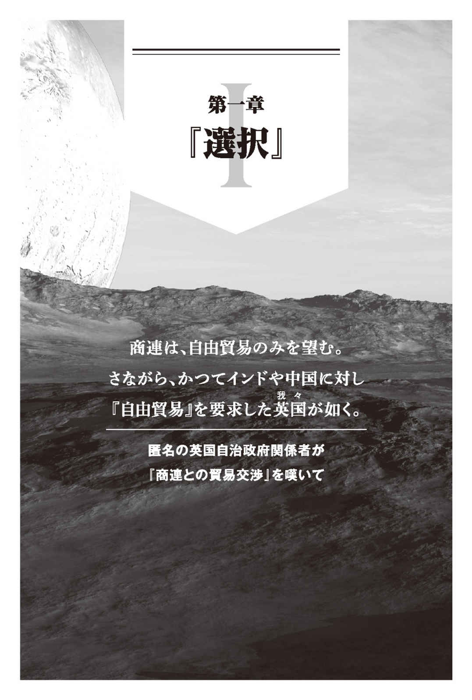
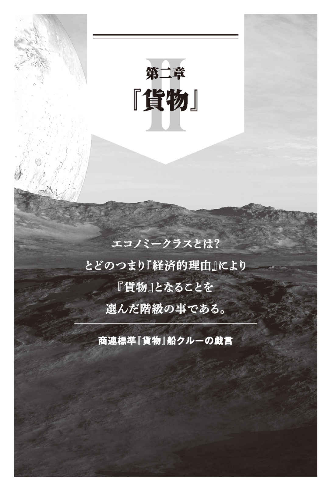

| ヤキトリ1 一銭五厘の軌道降下【地球総督府無償提供版】 (ハヤカワ文庫JA) | |
| カルロ ゼン | |
| 早川書房 (2017) | |
ご利用の端末によっては、文字サイズを大きくすると本文の表示が途中で止まることがあります。
その際は、文字サイズを小さくしてお読みください。
ヤキトリ１
一銭五厘の軌道降下
【地球総督府無償提供版】
カルロ・ゼン
ヤキトリ１
一銭五厘の軌道降下
① 概要
・商連海兵隊の安価な代用品
※機能的に商連海兵隊を代用しうるのみであり、互換性を保証するものではありません。地球総督府当局は、ヤキトリの使用により生じたいかなる損害からも免責され、損害補償は本国通商法の規定にのみ従属するものとします。
② 法的地位
・備品
③ 品質
・スペース・リンガ・フランカを記憶転写済み／知性を除き、意思疎通に支障はありません。
・標準戦闘課程を記憶転写済み／海兵隊初期教育課程合格済みの個体だけが出荷されています。
④ メリット
・コスト面／極めて安価です。
備考：リユースは可能ですが、リユースを前提とした商品ではありません。
⑤ 運用上の注意点
艦隊の環境で生存可能ですが二点、留意が必要です。
・薬物依存（常習的／矯正可能性は皆無）
反乱・集団自殺・暴動を即座に誘発しうるため、茶（惑星地球産の依存成分を含有する植物：致死性あり）に関する限りは薬物規制を解除する必要があります。
・鎮静音楽の必要性
無重力空間における異常行動の発生率が地表に比して多く、予防のために鎮静効果のある音楽を流すことが欠かせません。原住種の脳波構造より、有効性が認められた現地音楽（個体名：モーツァルト）を流してください。
結び
地球総督府は商連当局の認証を得た公的派遣業の提供元として実績・信用を積み重ねております。惑星降下作戦のコスト低減を検討するならば、ヤキトリの採用をご検討ください。最も安価にして、必要最低限のサービスを提供する最良の選択肢です。
中華帝国とセネガル、ブラジルとニュー・ヘブリディーズ諸島、モロッコとニカラグアに各々共通するものと言ったら人類という共通の仲間意識以外に一体何があろうか？
エリック・ホブズボーム
汎星系通商連合航路保守保全委員会管轄星系
惑星原住知性種管轄局、選定訓練施設
火星――第三ヤキトリ野外演習場――第三模擬拠点ビル
「......くそっ、長すぎるぞ」
待機時間のあまりの長さ――気に入らない連中と黙って見つめあうというのは秒単位で長すぎる――に耐えかね、思わず俺はぼやいていた。周囲の連中から咎 めるような視線が浴びせられようが、知ったことじゃない。
連絡があるまでは、愚痴一つこぼすな？ ヤキトリ訓練所には馬鹿げた規則が山盛りだが、その中でもずば抜けて馬鹿げた規則。
とどめにこの空間ときたら意欲を根こそぎさらってしまう！ テラフォーミングされたとはいえ、火星の環境はかくまでも劣悪極まりない。
防護スーツなしでも地球同様に活動できるという謳い文句は、『特殊な訓練を受ければ』という小さな、小さな、それこそ拡大鏡がなければ読めないような但し書き付き。肝心の項目を見落としたアホが昏倒するのは、ヤキトリとしての通過儀礼だとか。
人をとことん、馬鹿にした話だ。
もちろん、俺だって快適なファーストクラスで惑星旅行を楽しめるとまでは期待しちゃいなかった。
地球から、火星、そう、火星だ。そういう名前だった青い惑星までの航路での待遇は必要最低限そのもの。スリランカ語 でいうエコノミークラスとは、要するに、『貨物運送クラス』ということだとしっかり学習しちゃいたんだよ。
とはいえ、かつては先進的だったと過去の栄光に縋りつく没落諸国の技術を『子供の遊び』と笑い飛ばした商連人様だ。ご自慢の先端技術で仕事をやったと聞いていたんだ。そりゃあ、テラフォーミングぐらいお手の物だろうと考えたのがケチのつき始めだった。
......ようするに、だ。
お偉い商連人は惑星に降下する当事者ではなく、他 人 事 というわけだ。
こんな惑星で訓練するのはヤキトリぐらいなのだから空気に奇妙な異臭がしようと、酸素濃度がやけに薄かろうと、『誤差』で済ましやがる。
いよいよ脳が煮立ってくる直前、随分と長く待ち望んでいたノイズを耳が拾う。レシーバー越しに飛び込んでくるのは、情け深きこと慈母の如き訓練官殿のスリランカ語。
「チキン共、こちらキッチン。戦闘開始５分前だ。もう喋っていいぞ」
標準化されたスリランカ語で、どうしようもないほど非人間的な訓練官の口上に合わせ、俺は手元の時計を確認する。
待機命令は体感に比べ客観時間ではさほど長くなかったらしい。......きっと、気に入らない連中と見つめあっている不愉快な時間だったから長く感じたのだ。
「訓練想定はサーチ・アンド・デストロイのサバイバルとなる」
標準訓練の一つ、総当たりによる生存性と捜索・撃破能力を競い合う鬼ごっこ。チキンらしく、びくびく震え、寄ってたかって弱い者いじめに精を出す素敵な火星の遊戯。
「併せて、今回は弾丸に互換性がない想定だ。手持ちの装備のみでやりくりせよ。ヤキトリ諸君、幸運を。開始まで残り４分と30 秒だ。キッチン、オーバー」
こちらの思惑など知ったことかとばかりに、言い捨てるなりキッチンからの通信は終了。いつものことだが、人を馬鹿にしたやり取りだ。
地球産チキン呼ばわりされ、火星キッチンで焼かれ、宇宙ヤキトリになる？
ふざけた話だ。
笑えないとすれば、俺も、周囲の連中も、全員がそうなるしかないという現実だろうか？
「聞いての通りだぞ。どうする？」
「隠れましょう。生き残ることが最善よ。はやく、ここから離れないと」
ましな屑の言葉に、一番ひどい屑が応じる。これもいつものパターン。タイロンには我慢できるが、アマリヤの独善さと思い上がりには我慢が難しい。
黒白つけるという日本語があるが、俺は、黒人のほうが信用できると火星で学んだ。黒が正義だ。白は、くそ野郎だ。
ついでに前言を撤回しよう。沈黙しておけという規則万歳だ。こいつらを黙らせることで地球の平和に貢献したとノーベル平和賞を商連人に贈呈してやりたい。
「おいおい、サーチ・アンド・デストロイなんだぞ？ どうせ、総当たりなんだ。ここで、籠城する方がまだましだ」
分かりきったことを、何度説明すればわかるのだとばかりに俺は肌どころか頭まで真っ白に違いない間抜けへの言葉を続けてやる。
「スコアがないとどのみちドベだ！ 逃げ回った挙句、『また』一方的に撃たれろとでも？ 冗談じゃない。火星くんだりまでやってきたのは、負け犬とつるむためじゃないんだぞ。だったら、拠点を作り、抵抗する方がまだましだ！」
「無謀なリスクをとることを勇気と勘違いする男は、これだから困るのよ。弱い犬ほどよく吠えるって、本当ね」
「我らがアマリヤが口先の半分でも有能であれば、どれほど心強いことか」
「はっ、そっくりそのまま返すわよ」
アマリヤときたら、まったく学習しない。
「前回も、前々回も同じ馬鹿げた主張をそっちは繰り返している。その挙句、結果はどうだったか？ チキンの頭で覚えられないならば教えてやるが、見事なまでにぼろ負けしたぞ？」
「......試行錯誤の段階よ。少なくとも、伏撃のほうが生存性は高い」
「ああ、その通り。で、正しいやり方は？ 他の連中が知っていることを、俺たちが学べるのはいつのことかな？」
にらみ合えば、視線の先にあるのは忌々しい碧眼。あれを殴り飛ばし、歪ませてやれればどれほど気分爽快だろうか？
だが、予定調和のごとく声が割って入る。
「二人とも、そこまで」
ここまで、ほぼ、前回、前々回と同じ。スリランカ語のリスニング試験でもやっているのかといいたいほど、一言一句違っちゃいない。
「ズーハン、君はどっちなんだ。籠城か？ それとも、かくれんぼか？」
「どっちでもいいわ！ 時間がないのよ!? 」
「どっちでも？ ダメよ、ズーハン。どっちか、選んで頂戴」
アマリヤに賛同するようで気が乗らないが、『選べ』というのは俺も同感だった。あえて賛成してやる道理もないので口は噤 むが、敵か味方かはハッキリ示してもらわないと困る。
「二人とも、決めるというのは賛成なのよね？ この際、コイントスでも何でもいいから、とにかく、早く決めましょう」
眉を寄せ、抗議の表情を造るのがうまい女だ。建前を口にするのはお上手だが、本心がどこにあるのかは心底から疑わしい。挙句、今回も旗幟を鮮明にしていない。取り持つ努力といえば聞こえはいいが、自分の意見を明らかにしようとしない態度は目に余る。
結局、中華系のお貴族様だ。外見を見ればいい。ぴしりと皴一つない標準戦闘服。黒髪には精油でも塗っているのか、ささくれ一つなく、おまけに、微かに香るのは香水に違いない。
なんとまぁ、ご優雅なことか！
野外演習場をプロム会場か何かと勘違いしている手合だ。社交界の常識を火星に持ち込む非常識人め。何一つ、彼女から自分が説かれるべき筋合いはないだろう。
「ともかく、決めましょう！」
ちらり、と残りのメンツを見やればエルランドが諦めたように頷く。寡黙な自称北欧人め、こんな時まで北欧人ごっこか。一言ぐらい、口を動かせばいいものを。
「隠れるべき！ こんな目立つところで籠城？ 正気とは思えないわ」
「だから、逃げ回ると？ ......馬鹿馬鹿しい。俺たちは、一番ド下手糞なんだぞ！ 他人と同じようにやれば、うまいやつにかなうわけがない！ だったら、拠点で抵抗する方が成算は高い！」
そして、アマリヤは黙ることを覚えるべきだ。くそったれの白人連中め、地球のラジオで飽き足らず、火星の地表でも戯言を吐き出し続けるとはどうかしているぞ。
予期しない前触れだったのだろうか？ なんとまぁ、驚いたことだ。今の今まで沈黙していた男が口を開く。
「アキラの言うとおりだ。できることを考えれば、籠城が正しい。今回は、籠城を検討するべきじゃないか？」
しかも、エルランドが俺に賛成だ。こいつは、今日一番の進歩かもしれない。万が一にせようまくすれば、アマリヤに理性が宿るやもしれない。
「だからって、リスクを最大化する!? ここにいれば、全チームから狙われるのよ！ そうなれば、全滅！」
「かもしれないな。だが、スコアは得られるだろう？」
「エルランド、あなたまで馬鹿にでもなった？ 全滅するのよ？ スコアなんて、全滅すれば無意味よ!? 」
訂正だ。アマリヤを黙らせるには、商連人の新技術とやらを探すほうが期待できるかもしれない。
そして俺ときたら、思わず口を挟んでしまう。
「あほか、これは、訓練！ ゲームなんだぞ!? 試してみたって、いいだろう！」
野外演習場の模擬拠点。初期配置としては、最高の条件だ。周辺の連中がニードル・ガンを手に突っ込んでくるところを迎え撃つ方がまだ成算ありだとなぜわからん。
「実戦では？ 全滅することを前提に、拠点防衛とでも？ 大した無能さだこと。貴方の勇気は知性と反比例なのね」
癪に障る言い回しだった。
「そっちの実力と口先が反比例の間違いだろう？」
「アキラ！ アマリヤ！ お願いだから、止めて。あと３分。これ以上は時間の浪費。決めて！」
はぁ、という小さなため息が改めて揃って５つ。どいつもこいつも、状況を何とか進めないといけないことだけは理解している。理解していながら、改善できないというのは呆れるべきか？ いや、俺もその中のバカ騒ぎに加わっているんだ。
協調性のある連中と、仕事ができればと切実に思ってしまう。
俺の願いを神様とやらが聞きつけたのだろうか？ いたたまれなくなっていた空間で、一人の勇者が口を開く。
「たまには仕掛けるのはどうだ？」
「タイロン、僕たちは他の連中のように動けない」
おまけに、と北欧人は言葉を続ける。
「撃ったところで、銃を当てられるかも怪しい」
興味なさげに傍観していることに気まずさでも覚えたのだろうか？ まともな頭が残っているらしい会話が飛び出してきたのは幸いだった。心なしか、疲れたような表情のタイロンとエルランドが代案を提案してくれるというわけだ。
「そりゃ、お前たちの問題だ。さすがに、多少なら俺は当てられるぞ」
「じゃ、タイロンを援護する形で......」
仕掛けようじゃないかという北欧人の提案は、相変わらず、最低の屑にさえぎられる。
「ダメ」
「は？」
「どうせ、弾を浪費するだけよ。また、弾薬費減点を食らうだけだわ。それぐらいならば、生存時間ペナルティを減らすほうがよっぽど合理的よ」
否定のための、否定的な意見か。
ほとほと、嫌気がさしてくる。俺は、こういうのが嫌いで日本の『福祉』から飛び出したはずだったんだが。
「減点方式か？ うんざりだ」
「合理的なのよ！」
「あきらめることが合理的だって？ はっ、とんだお笑い草だ」
嫌というほど日本で耳にした言い訳だ。俺は、それが、嫌で、嫌で、嫌で、どうしようもなく嫌で仕方がない。
「やけっぱちになった人間に、言われるとは光栄ね。自分の正しさを再確認できて、ホッとしているわ」
「自称賢明な大人様とやらか？ てっきり、地球限定種だと思っていたが、火星くんだりまではびこっているらしいな。商連人め、何が『検疫は完ぺき』だ。ざるにもほどがあるぞ」
「売り言葉かしら？」
ぶん殴れば、黙るだろうか？
「二人とも、やめて！」
「ズーハン、君もそろそろ腹を見せろよ。どっちの味方なんだ？ いつまでも日和見が許されるとでも？」
「どっちでもいいわよ、意見が一致さえするなら」
こちらを凝視する黒い瞳に浮かぶ苛立ち。咎めるような目線に込められた感情を、口に出せない嘘つきめ。
「またそんな適当なこと！ いい加減にして！」
「いい加減にするのはそっちだ、アマリヤ」
時間がないというズーハンの言葉だけは正しいのだ。
「コイントスだ」
決めるぞ、と周囲に一応の筋を通す。
「......時間がないわ。賛成」
「同じく」
ズーハン、タイロンが賛成。ちらりとみれば、エルランドも首肯。騒ぎ続けているアマリヤもこれで反論はすまい。
「表なら、お前が指揮官。裏なら、俺だ。コインの出目は逆がいいか？」
「あなたが投げるの？」
猜疑心の塊めと俺はため息をこぼす。どうして、こいつは、いちいち、突っかかってくるのだ。協調したくないにしても、足を引っ張ることもないだろうに！
「こっちで投げよう。後腐れなしでたのむぞ？」
「......私が表ね？ いいわ、エルランド、投げて」
表だけはだすなよという俺の視線を受け取ったエルランドは頷き、コインを一枚放り投げる。硬い金属音をきれいに響かせ、ゆっくりと落下するコイン。
出たのは...... くそっ、くそっ、くそっ！
「表だな」
バクスターが呟くなり、得意げな表情のアマリヤがふんぞり返るのが未来予知できてしまう。運が悪いと自称するエルランドに投げさせるべきではなかった！
「......私ね！ じゃあ、さっさと逃げるわよ！」
ご立派な表情で馬鹿が叫ぶ声に合わせて、俺たちは駆け出す。
徒労の結果をご報告するならば、単純だ。
頭に戦闘技術を焼かれていない俺たちは、火星での正しいアンブッシュ方法など『知らされていない』。他の連中は、『 α から ω 』まで知り尽くしている。ゲームになるはずもないのだ。隠れたつもりになっている俺たちは、いつものように、あっけなく発見されてしまう。
あとは、哀れなヤキトリの運命を追体験だ。
ニードル・ガンに串刺しにされるという素敵経験をもう一つ。だから、撃たれる寸前に俺は吐き捨てるしかない。
「くそったれめ」
① 政治状況
可住惑星。原住種あり。星間知性種認定基準を満たすものの、惑星統一政府なし。
林立した部族政体に近い統治機構が存在するため、原住種の文化保護を規定した倫理基準に従い、総督府は惑星地表での間接統治プログラムを運営中。
自由貿易に対する反抗運動はおおむね撲滅済み（原住種の分裂政体に関しては、１９０以上と数えられる。詳細は、別掲の学術報告書を参照のこと）。
② 経済状況
市場としては著しく小規模（間接統治を直接統治に切り替えた場合、赤字は確実）。特筆に値する工業基盤なし。極めて原始的な製造業の萌芽程度であり、原住種の工芸品が辛うじて市場価値を有する程度。一次産業（有機系）の供給源としても辺境惑星の域を出ず。商連に対する貢献は、ヤキトリの提供／航路上の経由地程度である。
③ 原住種の保護に関る現状
・惑星地表における自治権を保証／惑星主権のみ行使中。
・商連における市民権／属州民として登録中。
・宙賊対策／艦隊により人身売買を阻止中。
④ 倫理審査（列強派遣団による信頼醸成のための第27 次保護星域相互監査報告書より）
・概ね完璧／統治状況に倫理上の瑕疵なし。
課題：原住種の保有する旧式の熱核兵器管理について、彼らに対する啓発不足の指摘在り。
対応：『核兵器』に対する宗教的熱情（ＭＡＤという宗教と思われる）への干渉が原住種の信仰の自由を侵害しないか倫理委員会が検討中。

ロンドン宇宙港――第３ターミナル
ロンドン宇宙港とやらは、嘘の匂いだらけだった。酷く小奇麗な空間。清潔さに対する病的な拘り。真っ白なフロアに、煌々と灯される照明の明るさ。俺のぶち込まれていた収容所も外向けの区画はこうだった。上辺以外はヘドロだったが......体面だけは大した面の皮の厚さ。初めて降り立った瞬間、奇妙な既視感に襲われてしまうほどだ。
もっとも、全部が全部そうってわけじゃない。俺には好奇心ってやつがある。社会福祉公団様の施設外を見るのも久しぶりなんだ。
全く、何年ぶりだろうか？ 本当に、随分と糞のように久しぶりだ。昔、まだ、俺が自由だと言われていた頃以来だろう。
だというのに、新鮮な気持ちって感想を持てない。原因の半分以上は、お馴染みの腰縄と手錠の存在ってやつだ。
もう半分は、同行者が性根の腐りきった社会福祉公団の『保護者』様ってやつだからに違いない。正直、俺も独り立ちしたい頃なんだ。とにかく俺が好き好んで『大変にお忙しい職員の皆様』へ同道を願ったわけじゃない。
おせっかいな彼らは、つい先日まで『恵み深く』も『お世話』とやらになっていた『矯正施設』の『優しい』職員様だ。曰く、国連経由のリクルーター様へ引き渡すまでは、断固として『責任をもって保護』するだとか。
ふざけた口実で、ロンドン宇宙港まで勝手に付いてきやがっただけだ。旅費という名のこづかいがほしかっただけだろう。寄生虫め。
だが、忌々しい連中と同じ空気を吸う辛抱もあと少し。
「国連のヴァーシャ・パプキンさんですね？」
肩からぶら下げている翻訳か通訳か知らないが、言葉を訳す機械を、はい、と頷くのはガタイのいい男だ。
社会福祉公団の弛んだ腹が出た職員共と違い、奴のそれは引き締まり、率直に言って殴り合いが得意そうな肉体だ。にもかかわらず、その男、パプキンは胡散臭い微笑みを顔面に張り付けている。要するに、虚勢を張る必要がないタイプの野郎だ。
「日本の社会福祉公団より、ただいまをもちまして伊保津明君をお引き渡しいたします。受領書類にサインを」
「護送、ご苦労様です。ここにサインですね？」
へぇ！ と俺は小さく口笛を吹きそうになっていた。俺を『送迎』してくださった公団職員の皆様から『君』と呼ばれる！ これが生まれて初めてだ。いつもは、認識番号やら罵りやらなのだが。
物事が、変化している証拠だった。少しばかり明るい展望っていえるかもしれない。全ては眼前で俺の受領証明書とやらを公団職員に手渡している男、パプキンのおかげだ。こいつが俺をどんな風に利用する腹積もりなのかは知らない。だが、今までとは違った未来を期待するぐらいは、悪くないだろう。
そんなことを考えていると、俺へパプキンがちらりと視線を向ける。
「正直、随分と大げさなことに思えます。日本の流儀は存じ上げませんが、青年一人の引き渡しなんですよ。やりすぎでは？」
「とんでもない！ 全ては伊保津君の人権を『彼自身から』保護するためです」
噛みついてやりたい戯言を口にする職員共だが、今ばかりはおとなしくするしかない。土壇場で物事を壊すほど、俺は、短絡的じゃないんだ。
あと数分でこいつらとお別れできるというならば、殺意だって飲み込んでやる。
「......彼が、自分自身を保護できないからあなた方が？」
「ご理解いただけたようで幸いです。大崩壊以来、行き過ぎた自由が社会と個人を苛む事例が多すぎますからな。商連にも、困ったものです」
成程と、パプキンが愛想笑いと共に頷く職員様の言葉は聞き飽きた代物。本当に、本当に、本当に忌々しいぐらい耳に叩き込まれているそれ。なんでも、かんでも、悪いことは宇宙人のせい。聞き飽きた妄言だ。
商連人とかいう宇宙人なんぞは、知ったことか。俺にとって、ぶん殴りたいのは貴様らだ。
俺は成績が良かった。何しろ真面目に勉強したからな。サボっていた他の連中と違い、俺は、俺だけはまともだったんだ。だから、権利ってやつを主張した。アホ共と同じ労働共同体以外の進路ってやつを求め、大学へ出願しただけだ。何も間違っちゃいない。
だってのに『みんながやっているのに』だの、『一人だけ別の道を』だの馬鹿をいう連中に翻意を迫られ、断ったら反社会的性格認定だ。普段は仕事の遅いお役所も、人の邪魔だけはいっちょ前。あっという間に、俺を社会福祉公団の収容所へ『保護』しやがった。
一つ聞きたいんだが、このどこに商連が関係しているんだ？ 商連とやらがどうであれ、貴様らに俺を拘束しろと命令したのは誰だ？ 商連の連中じゃないだろう。
「では、確かにお引き渡しいたしました」
「はい、ミスター・伊保津の身柄、確かに責任をもってお引き受けいたします」
「電子鍵はこちらに。ご忠告ですが彼のためにも、解くときは周囲に注意し、最大限の配慮を払ってくださいね。では、我々はこれにて失礼いたします」
その台詞と共に、忌々しい社会福祉公団の制服を纏った屑どもは俺をパプキンに委ねて立ち去っていく。願わくは、二度と会いたくないものだ。奴らが死んだとかで、死体確認とかだったら喜んで駆けつけるんだが。
「ロンドン宇宙港へようこそ、ミスター・伊保津。仰々しいのもあれなので、アキラと呼ばせてもらっても？」
パプキンは手を出しながら大げさな口上を述べ始める。
「快適な長旅だったかはさておき、歓迎しよう。ああ、歓迎の握手はお嫌いかな？ そうだとしても、君が纏っているちょっと独特な、そう、日本風のアクセサリかな？ 腕のそれと縄は外させてもらうが、ご容赦ねがうよ」
「やっぱり、似合っていないとあんたも思うか？」
「伝統的な民族服だったりするのかな？ そうならば、気を悪くしないでほしいものだが、センスのないことだとは思うね」
その一言と共に、パプキンは手錠の電子認証を解除し、同時に手錠に絡めてあった腰縄を振りほどいてくれる。アホ共の忠告を真に受けるほど頭にウジが湧いていない人間ってのは、良いもんだ。
「やぁ、これで男前になった」
改めて差し出される手を俺は力強く握り返し、改めて謝意を口に出す。
「ありがとう、パプキンさん。全部、あんたのおかげだ」
「なんだか面映ゆいものだね。どうせ、近い将来には邪悪な商連の狗 と罵られるんだと想像ができても、なかなか愉快な気持ちになれる」
とはいえ、とパプキンはそこで言葉を変える。
「立ち話もなんだ。場所を変えようじゃないか」
実に素っ気なくいうものだから、俺はなんとなく頷いてしまう。
この男がどこへ向かうかも分からず、付いていった先にあるのは小奇麗な宇宙港に相応しいオシャレな飲食店。俺とは、徹底的に縁のない世界ってやつ。
殆ど好奇心だけで、俺は店の看板に視線を向けていた。煌びやかな電飾のアルファベットだが、幸いなことに俺には読めた。収容所にぶち込まれていても、それ以前の受験勉強で覚えたことを全部忘れてしまったわけじゃない。
エムシードナルドって店だろう。読めたことがちょっとうれしく、メニューを覗き込んで俺は後悔する。さびれた語学力じゃ掲示されているメニューまで読むのはきついが、パネルの写真を見る限り本物のパンと肉を提供している高級店だ。
眩しくてたまらない。
「マクドナルドでいいかな？」
「なんだって？」
Ｍとｃでエムシーじゃないのか。いや、それ以上に......こんなところに入るはずもないと思っていたが......そのまさかだ。信じがたい思いの俺を置き去りに、パプキンの野郎は平然とした足取りで店内に足を運び入れている。
唖然とする俺の前で、カウンターにおいてある機械の前に立ったパプキンの野郎はそこで、信じがたいことに暴言を口にする。
「ミスター・アキラ。君は、何を注文するかね？」
「は？」
ぽん、ぽん、ぽん、とタッチパネルに何事かを叩き込んでいるパプキンは知らないのだろうか？ 俺はすっからかんだと。知らないはずがないだろうさ！ 収容所にぶち込まれて、手持ちなんてどこにもない。貯金なんて没収されている。
ここまでくれば、十分だろう。
全部承知の上で見せつけているのか？ だとすれば、随分とふざけたやつだ。舐め腐っていやがる。選べる人間は、いつだって傲慢だ。自分ができないことを、見せびらかされるのは腹に来る。
「無視しないでくれ、注文だよ、注文」
注文とやらを済ませたパプキンが話しかけてくるが、うっとうしい。
こいつが、俺をつい先ほど社会福祉公団の手錠を解除してくれたリクルーターでもなければ、文句なり拳なりの一つでも見舞ってやりたい気分だ。
......初対面の際なんといってたか覚えちゃいないが、要するに、俺はパプキンの野郎に傭兵か何かに誘われ、飛びついた。それ以外に、道がなかったからだ。そんな人間に、こいつは、なんと言いやがった？
「選べるとでも？」
「何だって？ 好きに選べばいいじゃないか」
衝撃的な発言、侮辱的極まりない。拳を握りしめ、俺は思わず歯を食いしばる。
選ぶ？ 選ぶだって？
金も配給券もないのに、どうやって選べと？
俺に選択肢がないことを知っている癖に、良くも言えたもんだ。屈辱に拳を握りしめながら、俺は辛うじて平静を装って口を開く。
「パプキンさん、少しいいかな」
「なんだろうか？」
ぽかんとした間抜け顔が心底から憎たらしい。
「あんたが存じ上げてくれていると幸いなんだが、俺のちっぽけな財産とやらは政府に『没収』されている」
「お金の問題ということか？ つまり君が気にしているのは会計ということだね？ なら、問題はない」
「大問題だろう」
金がない。一体全体、どうすれば、これで問題がないなんて言えるんだか。人を嬲 りやがって。
「問題ないさ。ミスター・アキラ。君にくっついてロンドン観光にお越しいただいた社会福祉公団のタカリ屋連中の出張費まで国連持ち。まぁ、なんだ。商連人の財布ってことさ。遠慮はいらない。君の食費ぐらいはこっちが経費で落とすよ」
「なんだって？ 本気か」
「好きに注文すればいい。支払いはこっちでもつさ」
眼前でパプキンは躊躇 うことなく断言してみせる。
いや、厳密に言えばそいつの言葉をそいつが肩からぶら下げた機械が翻訳して、機械音声を垂れ流してくれているというべきか。
思わず、なんと返すべきか戸惑う発言だ。
好きにしろ？ 選ぶ自由があるってことか？ 家族でもないのに、奢ると？ 何に驚くべきか迷うというのは、人生においてこれまでに類例がない代物だ。
翻訳機が壊れているといわれる方がまだしもありえそうだ。
いや、そうだ。
機械をどうして信じたのだ？ よそ様がどうなっているのか知らないが、商連が来る前は品質で世界一だったとか老害共が自慢する日本製を見ればわかる話だろう。収容所の機械なんて、しょっちゅう故障だらけだった。
「その機械、壊れてないか？」
「翻訳機は正常だ」
パプキンの返答は、自信と奇妙な確信に満ちている。それこそ、自分の肩にぶら下げている翻訳機の様子を一瞥することもなしだ。
「確認もなしか？ 言葉が通じているか確信がないが、念押しさせてくれ。まさか、そいつを信用しているのか？」
「信用しているとも。この上なく。法的業務へ仕様が許可されている商連／国連認証済みＫＳＡＨ‐ ６３２７８２カテゴリーのＤ32 級だからね。こいつが製造寿命で故障するより、人間の方が先にくたばるだろうさ」
「すまん......なんだって？」
「官僚的な言い回しまで、実用上は完璧な翻訳機ということだ。ミスター・アキラ。君の言葉はきちんと私に伝わっているし、私の言葉も君に伝わっていると思うのだが」
分かるだろうとばかりにパプキンは笑みを浮かべて見せる。
「個人的な意見だが、こいつは商連が珍しくいい仕事をした代表例だ。国連標準語の意思疎通用としては最高だと思うが」
「......だとすれば、機械の問題ではないんだな」
今までの経験則から、機械は信用しないことにしていたんだが、俺が間違っていたらしい。言われてみれば、確かに翻訳機とやらが壊れているようにも思えない。
したがって、原因は単純だ。
機械は糞のように故障するし、まともに動作しないとはいえ......大抵の人間よりは余程マシだ。機械ですら、人間に比べればずっと信用できる。誰にだって異論がないだろう。
「人間が問題だったと思い出したよ。旨すぎる話は、信じないことにしているんだが」
「ミスター・アキラ。何か誤解があるのでは？」
「誤解？ じゃあ、本気で食事を奢ると？」
困惑した表情を浮かべるパプキンだが......随分とまぁ表情を造るのがうまいことだ。日本の政治家といい勝負ができることだろう。
食べ物を、選ばせてくれる？ いい冗談だ。挑発的ですらあるだろう。
並べられた単語の意味は、本当の意味と違う。これまでずっとそうだった。正しくは、『我慢する』という意味合いだ。俺は、我慢することを選ばされていた。誰かの都合が悪くならないように、ずっと、ずっと、皆に合わせろと生まれてこの方ずっとだ。
選ぼうとして、収容所にぶち込まれれば嫌でも言葉の裏を勘 繰 るようになる。そうなるのが、当然だ。今さら、それを、変えられるはずがない。
「嗜好品を？ それこそ正気か、あんた？」
「別に変な話でもないだろう。食事を一緒に取るのがそんなに奇妙か？」
「むちゃくちゃだ。とても、信じられない」
不信感を分からないとすれば、そいつは、きっと、血税を啜 るのが大好きな特殊階級（国民福祉特恵待遇カテゴリー６３４‐ 高度代替困難職務遂行者）の吸血鬼に違いない。
連中、自分の言葉を俺たちが信じていると信じ込んでいる。......そうでなければ、あんな戯言を口に出せるはずもないじゃないか。
「これまでにも、なんどか会話したおかげで信用を勝ち取ったつもりだったんだがね」
「あんたと喋ったのは、社会福祉公団施設で一日だけ。しかもパプキンさん、大半はあんたが一方的にしゃべってただけだ」
政治家や学校の糞教師共と同じだ、という一言を飲み込みながら俺はまた拳を握りしめる。
選べる自由なんてなかった。
ずっとだ。
生まれてから、この方、ずっと。
選ぶことが権利だといわれつつ、選ぶと罰せられた。
我慢しろ。
公平に分担しろ。
皆と同じようにしろ。
平等に分かち合え。
戯言のような理想、いや、糞のような戯言を口いっぱいに頬張った『先生』とやらが、俺たちの耳に無理やり押し込みやがったフレーズはいくらでも反復できる。
我慢して、アホ共の尻拭いを強制され、ノルマを割り当てられ、めげずに抜け出そうと頑張った俺は、優等生だった。皮肉なことに、学業で一番の優等生だった。
労働共同体の福祉労働以外を夢見て、大学へ出願できるほどにって言えば過去の努力も伝わることだろう。奴らが、成績を口実に却下できないほどに、俺は数字を出していた。
結果、反社会なんとかとやらで収容所で『再教育』される羽目に陥ったんだが。今になって思えば、なんだって厭味に聞こえて仕方がない。だからこそパプキンの心底から困惑しつつ憐れむような表情が癪に障る。
こいつは、なんで、俺を、哀れむのだ。
「ＯＫ、では、同じものにしよう」
「なんだって？」
「勝手に注文する。費用もこちらで負担する。別に請求もしないし、食べたからなにかを要求するということもない。気が向いたら自由に食べてくれ」
そういうなり、奴は注文端末に何事かを音声で申し込む。
同時に、懐から取り出したカードをさしかざせば......注文と決済やらが、終了らしい。受領を意味するらしい音声と共に、吐き出されてくるレシート。
それをパプキンは財布に挟み込むと笑顔で俺に話しかけてきた。
「今、スタッフが用意してくれているから席を選ぼう」
無造作な発言だが、俺は心中で苦笑してしまう。
まただ、と。
呆れるほど頻繁にパプキンの口から飛び出してくる『選ぶ』という単語。苛立ちと困惑を覚えてしまうほどに、軽々しく扱われる言葉は俺にとってどれだけ重いか知りもしまい。
「ついでに説明すると、ここでは自由に席を選べる。まぁ、話をするには静かなほうがいい。折角だから、空いているあそこにしよう」
自由、選ぶの連発に酔いそうだ。
正直に認めよう。俺は、このパプキンという男の在り方が理解できない。こんな人参をぶら下げるなんて、いったい、俺をどう利用するつもりなのだ？
ペラペラと口を回し続けるパプキンに対し、俺はただただ疑念を抱く。
「大崩壊以来、日本自治政府の社会保障政策には課題が多いらしいね。君の優しい保護者とやら、どうしようもないよ。私の母国もまぁ酷いものだが、ディストピア度合いで行けば負けるやも知れないな」
訳知り顔で語る男の表情は、何も俺に窺わせようとはしない。内心が読めない人間というのは、酷く厄介だ。小奇麗な席に腰かけ、座り給えと勧めてくるパプキンは経験則にないタイプだと認めるしかないだろう。
腹をくくり、俺はパプキンに相対するシートに腰を下ろす。......空路の移動機と同じで、硬くない座り心地は妙になじまないものだが、それにしても座りが悪い。
「向かいに失礼。言葉遣いも容赦してくれ。どうやら、俺は反社会的性格の持ち主らしくてね。おかげで、社会福祉公団から何人も心配してついてきてくれてな」
「いや構わないさ」
俺の皮肉に苦笑しつつ、パプキンは相槌を打ってくれる。
「リクルートしている側がいうのもなんだが、大抵の場合、日本自治エリアからの応募者には問題が多い。過剰に卑屈になるか、極端に反抗的かの二パターンだ。君の場合は、反骨心もあるにはあるんだろうが......」
何がウソか、何を偽っているかはさておき、臭さはわかる。......こいつだって、腹に一物抱えているのはわかるんだ。なのに、今は、なぜか、こいつの態度に違和感がない。
怖い。
純粋に、初めての感情だった。わからないのは、恐ろしい。
「まぁ、おいおいわかる話だ」
その通り。相手のことを知らないと、いつ、寝首をかかれるかもわかったものじゃない。今のパプキンは天敵や不俱戴天でないにせよ、将来の保証などなし。
ナイフを手放していいのは、生きる意志を失った羊だけだ。
「少しばかり話でもしようじゃないか。君が最終契約書にサインする前に、お互いのことを知っておくのは悪くないだろう？」
「部分的には同感だ」
頷きつつ、俺は思い切って問い返す。
「だがパプキンさん、あんたが俺のことを知ってどうすると？ 雇用した兵隊の行方なんて、あんたに関係するのか？」
誘われた時、傭兵だなんだとかいう話だとは理解している。俺が行ってしまえば、その後、こっちのことなどパプキンの奴に関係ないだろう。強い視線でじっと見つめると、パプキンは肩をすくめてこちらの背後に視線を向ける。
「どうにも取り付く島がないな」
そこで微苦笑を浮かべ、やつは、突然俺の後ろに立っていた人間に声をかける。......俺が、他人の足音に気が付かないなんてよほど緊張しているのか？
どっちにしても、嫌な汗が背筋に流れて仕方ない。
「ご苦労さま、ちょうどいいタイミングだ」
ごゆっくりどうぞ、という建前だらけであろう言葉とスマイルで残されたのは、紙箱で梱包された何かと使い捨て容器の飲料物。
揃いの食事だというが、本当に、揃いで手配したらしい。
「やれやれ、マクドナルドは相変わらず仕事が早い。銀河一、誰にでもフレンドリーだと思わないかい？」
「......ん、ああ、そうだな」
無造作に紙箱に手を伸ばしたパプキンが取り上げるのはハンバーガーというやつだ。受験勉強中、何かの文化資料で見たことがある。パン、肉、野菜、チーズ。サンドイッチという文化と似ているという話だったか。
だが、そんなことはどうでもいい。
忌々しい合成プラントの味は散々に覚えさせられている。ゴムのような食感に、奇妙な異臭。トドメは腐ったような味わいと来ている。配給券で選べるのは、それだけ。選べるってのは要するに、我慢する権利ってことだった。
それが、どうだ。目の前にある箱から漂うのは異臭というよりも芳香だ。においが、食欲をそそる。唾がこぼれそうになってしまうほどだ。生まれてこのかた、飢え以外で食欲を刺激されるのは......初めての経験だった。社会福祉公団の収容所にぶち込まれる以前でさえ、そんなことはなかったというのに。
「冷めてしまう前に食べ始めよう」
パプキンは実に無造作にかぶりつく。
認めよう、羨ましい。
「食べないのかね？」
食べていいのか？ 食べるとどんな代価を要求されるのか？
だが、これを逃せば......次にこんな上等な食事にありつける機会がいつある？ いや、そもそも、次があるのか？
迷いを押し殺し、俺は取り繕いの言葉を口に出す。
「......初めてなので、食べ方がわからない」
「食べ方は、まぁ、見ての通りだ。特にマナーもなにもないぞ。フォークとナイフというような食事でもないんだ。ガブリといくとなかなかイケる」
「返せと言われたって、返せないが？」
葛藤の末に吐き出した言葉だった。
眼前でうまそうに貪られ、香りが嗅覚を刺激してくるというのは慣れないだけに強烈極まりない。
「構わんとも。......少しは信用してくれ。なんなら、毒見でもしようか？」
「毒見？」
「ロシア人の食事だからって、警戒されているのかとね。別にポロニウムもダイオキシンも入っちゃいない。必要ならば、その旨を記載した宣誓供述書を用意してもいいんだが」
訳の分からない単語を連発したのち、パプキンはこちらの戸惑いに気づき口を噤む。どうにも俺には理解できないネタだが、冗談だったのか？
距離感の分からない男だ。
「同胞へは鉄板のネタなんだがね、ダメだったか」
もぐもぐと美味そうにハンバーガーを咀嚼し、よく冷えたドリンクでそれを流し込んでパプキンは苦笑して見せる。
「翻訳機の欠陥でないにせよ、文化的な障壁を訳した言葉が撃ち抜けるわけではないと思い知らされるよ」
なにしろ、と彼はハンバーガーを片手に言葉を続ける。
「意味が伝わっても、面白さが伝わらないのはもったいない。言葉とは不思議なものだね。その点、味というのは好みこそあれ人類共通の分かりやすさだ」
召し上がれ、と続けられてそれ以上断る理由もない俺はおずおずとハンバーガーを手にする。
思いきって噛みついたとき、俺は戸惑う。混ざりもの、じゃりっとした突っかかり。一瞬だけ欠陥品を喰わされたのかと憤りかけたところで俺は違いに気が付く。
職員の嫌がらせで完全栄養食に混入したゴミではなく、パンの上にまぶせられている粒のような調味料だ。
なにより、歯ごたえがある。ゴムのような食感じゃない。
遅れて舌に伝わるのは......肉の味だ。数回だけ味わったことのある、肉モドキとはけた違いに旨味を含んだそれ。噛めば噛むだけ、味が出てくる。
「味はどうだね？」
「......それを聞くか？」
合成じゃない、牛の肉。
温かく、きちんとした食感のある肉。
「無粋な質問だったね。もしよければ、追加してくれてもいい」
涎が口の中で溢れるほどに蠱 惑 的な誘惑だ。
毒を食らわば皿までという衝動に身を委ねてしまえればどれほど楽だっただろう。きっと、なけなしの自制心がなければ飛びついていた。
だから、俺は、勿体ないと叫ぶ心の一部を押し込め話題を強引に移す。
「飯を奢れるなんて、パプキンさん、あんたはどんだけ稼いでるんだ？」
「ミスター・アキラ。一つ訂正しよう。調理師なんだ。稼ぎの多寡にかかわらず食事代ぐらいもつのは当然だろう」
「調理師？ あんたは、リクルーターだとばかり思っていた」
俺を商連の軍隊だか艦隊だかが使うというんだから、募兵係、リクルーターだろう。ついでに言えば、眼前の男には調理師なんぞとても似合わない。包丁よりも、ナイフで敵を刺し殺しそうな体格じゃないか！
「だいたい、あんた、調理師というには物騒すぎる」
言動の物腰こそ丁寧で柔らかだが、本質を偽るには足りないだろう。なにしろ眼光に険がありすぎる。普段、厨房で調理しているとはとても思えない剣呑さ。いうなれば、隠しても奴からは狼の牙がちらつく。
「心外だな、これでも立派な調理師だよ。勿論、正式名称というか法的な呼び方は違うが通称では調理師だ」
「通称？」
「説明するとも。だが、その前に追加のオーダーがないかだけ確認を。こっちは年で節制も必要だが、君のように成人したばかりの世代ならば話も違う。がっつり食べられるはずじゃないか。まだまだ行けるだろう？ 追加注文は本当にいいのか？」
誘惑を諦めない態度といい、ここまで挑発されて穏やかさを保つ物腰といいすべてが剣呑極まりない。
吠えないからと言って一律に相手をどうしようもない臆病者だと考え、自分の強さを誇示しようと叫ぶやつほど、弱い負け犬だ。
叫ぶ犬は撃ち殺せる。
だが、叫ぶ必要のない犬は本当に怖い。
「......歳だけが理由じゃないさ。ただ飯にがっつくのは、どうにも後が怖い」
「欲張らないってことかな？ なかなか、色々な経験を重ねているようだね」
俺の一言から、どんだけ読み取るのだろうか？ 物騒で頭の回転が速いのは察していたが、いよいよこいつは強敵だ。
自信、傲慢さ、そして丁重さの混合？ 実に最悪だ。一番、厄介な手合いじゃないか。
「あんたの想像が正しいだろう。自分の取り分はさっさとだ」
「どこも変わらないわけだ」
寂しさを携え、パプキンは手にしていたハンバーガーを丁寧にプレートの上に戻す。別に食べ方ぐらい好きにすればいいし、放置しても構わないのだろうが......この男のハンバーガーへの執着は何なのだろうか？
日本でも、食べるペースぐらいは選ぶ権利がある。もっとも、公共財たる公共食堂でモタモタ席を占有していると『反社会的占有罪』で告発されるが。
誰からも監視されず、せかされもしない食事というのはめったになかった。公共秩序警察の屑どもがロンドンに居ないのは知っている。だが......正直、今、この瞬間にも人の足を引っ張るのが大好きなお役所の連中の姿が現れないか不安でならないほどだ。
「宇宙に上がれば、その意見も変わるだろう。良い意味でも、悪い意味でも。とはいえ、今ばかりはゆっくりでも悪くはない」
当人としては意味深に呟いているつもりなのかもしれないが、片手でケチャップのボトルを握りしめているのでは台無しだ。
「せめて、フライドポテトの追加はどうかな？ 君が今食べているものだ。芋をあげただけだが、これが、中々奥深い」
「どうも合成食を思い出すんだが」
「まぁ、澱粉だからな。とはいえ、マクドナルドのフライドポテトに地球のケチャップをたっぷりつけて食べるのは宇宙勤務者に大人気なんだぞ」
食べればわかるだろうなどと言いながら、ケチャップをまぶしたフライドポテトを口に運ぶ様は......随分と子供臭い。
これが演技だとすれば、狼がよくもまあ上手に羊の皮をかぶったものじゃないか。
「随分と熱弁を振るうんだな」
「君も宇宙に出れば同意してくれるだろうさ。この雑な塩味、流石 に地球だ」
「宇宙では違うとでも？」
「ああ、大いに違う。『大満足』って言葉を君は知るだろうさ」
力強い首肯の言葉。同時にパプキンの言葉には、珍しくあからさまな感情すら込めてある。馬鹿げているかもしれないが、奴は本気に見えた。
俺には、どうにも理解できない。
「商連の船に乗ってしまえば、嫌でも分かる。人間にとって、マクドナルドが商連勢力圏で一番高級なファーストフードだ。これを愛さない人類がいるとすれば、残念だが友達になれるとは思わない」
「ご高説の力説中にすまないが、俺はもう十分に味わったし、あんたの好みにとやかく言うつもりはない。仕事の話を進めてもらいたいが」
「仕事？ やれやれ、仕方ない」
気 障 なことに、パプキンはポテトに伸ばしていた手を引っ込めるなり、卓上においてある白い紙の束に手を突っ込む。無造作に数枚つかみ取り、それで手を拭う。
そうだとは思っていたが、やはり、ここでは何もかもが使い捨てらしい。
「となると正式な契約説明だな。その手続きに入る前に、形式的で恐縮だが法的要請を果たそう」
ええと、どれだったかなどと呟きながら、パプキンは書類カバンに手を伸ばす。
マクドナルドの磨き上げられたテーブルの上に取り出されるのは、分厚いフォルダと頑強そうなタブレットだ。
「ああ、これだ。一応、これを読み上げて資格証明するのが義務だからね、忍耐してきいてくれよ？」
取り出した書類を手にしてパプキンは読み上げはじめる。
「汎星系通商連合航路保守保全委員会指定による惑星原住知性種管轄局選定により業務受託を行う国連・総督府弁務官事務所合同許認可機構によって認証される特殊宇宙保安産業管轄汎人類担当官認可資格保持者として、自分、ヴァーシャ・パプキンは説明業務を行います」
「は？」
翻訳機から流れてくる単語は、まるで呪文だった。
さっきまでの言葉が秘められた本意を疑うべき類 だとすれば、今の言葉は文字通りに理解が及ばない代物だ。
「商連に雇われる前の形式ってことさ。哀れなリクルーターに課せられた規則ということだと思って協力してくれ」
「お役所仕事ってのは、どこもか」
納得できる説明だった。宇宙人の商連政府様も、我らが慈悲深い日本政府も変わらないってことだ。
「伊保津明氏、公式の手続きに基づき、私の資格を認証する旨を音声にて発してください。機械にて録音します」
「......どうしろっていうんだ？」
「この紙通りに読み上げてくれ。一応、日本語のはずだ」
手渡された書類は、確かに日本語だ。問題があるとすれば、ついさっきまでのパプキンの言語と同じく奇怪な代物ということ。
意味がさっぱり分からない。
「汎星系通商連合航路保守保全委員会指定による、なんだこりゃ」
「お役所文法、お役所方言だ」
意味が分からない書類にサインする？ 馬鹿げている。ありえない。そんなことをするのは、自殺志願者だけだ。
「訛っててきついとは思うが、まぁ、合わせてやってくれ」
「だめだ、説明してもらう」
俺を利用しようとするのはいい。俺も、相手を利用する。だが、俺が納得できない方法で活用されたくはない。だから話を聞いて自分で決める。
隠し事がおおいのだろう。相手が面倒くさがったり、露骨に嫌がるとは承知している。しかし、譲れない一線なのだ。
俺は、自分が分からないことについてサインしないと決めていた。絶対に、だ。
「説明？ 構わないが、何を」
「この文の意味だ」
さぁ、どうくるか。
渋るか？
ごまかすか？
......どう出てくる？
「契約書の説明を求められるのは、久しぶりだ。よろこんで説明させてもらおう」
「は？」
「は？ と言われても困る。君の質問だろう。何から説明すればいいんだ？」
面倒を予想し、腹をくくっていた俺はあっけにとられパプキンの表情をまじまじと凝視していた。渋られるかと覚悟していたにもかかわらず、奴の返事は快諾だ。
本気か？
「じゃあ、まずは舌を噛みそうなこいつ、汎星系通商連合航路保守保全委員会指定による惑星原住知性種管轄局ってのは、なんだ？」
「要するに、商連からみた地球の国連ということさ。それでもって、国連・総督府弁務官事務所合同許認可機構という組織を宇宙人が『公的な許認可組織』として認めているって意味だ」
真に驚くべきことは、パプキンは言葉通りスラスラと説明をしてくれているということに他ならない。
「特殊宇宙保安産業は？」
「正しく、今、君が応募している傭兵モドキの正式な法的カテゴリーだ。職業自体は軌道降下をする歩兵となる。地球だと、もっと多種多様な罵詈雑言で表現されているが、公文書だと無味乾燥なものだろう？」
かみ砕いて説明しているのだろう。少なくとも俺が理解できる範疇に限れば誠実な回答だ。ついでに言えば、嘘の匂いが少ない。ない、と断言するのは危険だが......こいつは臭くないのだ。
よほど卓越した詐欺師か、何かの思惑があって素直に答えているかのどちらかだろう。ひょっとすると、両方かもしれない。
「管轄汎人類担当官認可資格保持者ってのは？ パプキンさん、こいつは、あんたのことだと思うが」
「その通り。ついさっき、調理師と俗称で語った私の正式な肩書だ。私、ヴァーシャ・パプキンは邪悪な商連の手先でね。地球人を宇宙の傭兵モドキとして売り飛ばすんだ」
......地球の支配者様の手先、宇宙人の傭兵募集係というわけだ。
「さて、ミスター・アキラ。君は説明を受けることに同意してくれるかな」
「同意だ」
他に選択肢もないだけに、話を先に進めるために俺は頷く。
「大変結構。ではミスター・アキラ、説明の前に一つ良いだろうか。君について改めて簡単な質問だ。日本地域を管轄する自治政府の社会福祉公団と称する自治団体から『精神鑑定書』とかいうへんてこな書類が出されている。これについて確認させてくれ」
俺は思わずパプキンの顔をぶん殴りそうになっていた。相手がやつでなければ、或いは、殴ったかもしれない。
「......何を話せと？ 愉快な話じゃないんだが」
パプキンは俺を反 吐 のような収容所から、連れだしてくれた。胡散臭い男の言葉に応じたのは、それ以外に道がなかったからではあるが、おかげでヘドロの底から出られたのは間違いなく事実なのだ。
どんな性根や思惑をパプキンが抱いているにせよ、結果としては今のところ良い方向へ物事が進んでいる。結果、結果がすべてだ！
無礼な言葉を聞いても、殴り掛からない程度に我慢するのは、そのためだ。
しかし、しかし、だ。感謝すると言っても物事には限度がある。不愉快な過去を荒らされていいわけがあるか？ ないだろう、普通。
「別に根ほり葉ほり事実関係を確認したりはしないとも。むしろ、はっきり言っておくと私はその辺に興味がないほどだ」
「じゃあ、何を話せって？」
「なぜ、この紙がでているか......君の自己認識を聞かせてくれるかな。何でもいいが、君の意見をぜひとも知りたい」
「はぁ？」
思わず聞き返していた。誰もかれも、俺が有罪だと決めつけて問いかけてきたことはあるが、意見を求められたのは初めてだ。
「カウンセリングでもするってか？」
「いや、そちらもまったく。なにしろ私は精神科医でも、精神医学の専門家でもない。カウンセリングは商連政府の専門部署に任せる仕事だ」
さっくりとした言葉。裏腹に、パプキンの目はえらく鋭い。
これがつい先ほどまで、ハンバーガーとフライドポテトについて喜々として熱弁を振るっていた男だと？ とても、同一人物とは思えない。パプキンの変貌ぶりは、かくまでも劇的だった。
「さ、聞かせてくれ」
豹変し、むき出しの凶暴さすら交えた眼差しが俺を凝視する。のぞき込もうとしてくる視線は、酷くこちらを落ち着かない気持ちにさせやがるではないか！
「君は、どうして、隔離されたと思う？」
答えを求める声。
糾弾するでもなく、軽蔑するでもなく、純粋な問いかけ。だからこそ、不安すら掻き立てる。いったい、何故こんなことをこの男は求めるのだ？
理解できない未知だった。どうすればいいのか経験則で理解できず、俺は思わず普段から思っていたことを口にしてしまう。
「正気だったからだろ？」
「......君が正気だったからと？ 興味深いな。ぜひ、続けてもらえるかな」
ちらり、と。
パプキンが俺を観察する視線に妙な色が浮かび始める。
「どいつもこいつも、自分の世界に逃げ込んでた。プライドだけが富士山よりも高くて、現実はド底辺。だから、都合の悪い事実から目を背ける」
俺の遺伝子提供者とやらも、そうだったらしい。
......らしい、というのは不公平だ。なにしろ、俺は、連中のことを殆ど知らない。尤も一般的な日本人で『親』のことを知っている奴の方が珍しいのだろうが。
ともかく、俺の知る限り、現実から集団で逃避する空間だった。
悪いことは、人のせい。自分たちは、犠牲になっているんだと誰もが口にするゴミのような空間。で、不都合な真実を突き付けられると騒ぎだしやがる。
プライドだけが超弩級。口先だけの屑ども。
「『自分たちのような勤勉な人間が苦しんでいるのは、邪悪な商連のせいだ』と生まれてこのかた真面目に働いたこともない連中が、素面で、素面でだぞ？ 真顔で語るんだ。政府の餌が不 味 いと一人前に叫ぶくせに、仕事をしようとはしないんだ」
そして、俺は働いて、自分の金で食い物を手に入れたかった。手に入れかけた。そして、奪われた。いつだってそうだ。ごみ共は、頑張った人間の足を引っ張る方に喜びを覚えやがる。
「不都合な真実なんて見向きもしない。自分は被害者だって連中だらけ。......そんなところで、俺がまともじゃ都合が悪いんだろうさ」
「どう都合が悪いんだい？」
「俺が、自分の人生を自分で動かしたからだ」
全員が、選んだ振りをしていた。俺は、選びたかった。だから、選ぼうと抗 った。労働共同体の福祉労働なんてまっぴらごめん。だから、勉強して、受験資格を獲得した。獲得した折角の権利だ。そいつで、大学に行って、掃き溜めから抜け出そうとし、足を引っ張られた。たったそれだけの話だ。
あんなに苦労して勉強していた理由は、驚くほど、些細でささやかな願いなのだが。俺は、ただ、自分の自由を確保したかっただけだ。
「......動かせない人間には眩しすぎたのかな？」
「絶対正義の『みんな』と違うことをしたのさ」
給付栄養とやらではなく、労働の対価を求めようとしただけだ。ほかの連中がタラタラしているところで、抜け出そうと人一倍に頑張っただけだ。
要するに、俺は、勤勉だった。不平不満よりも、手を動かして糧を手にする男ってやつだろう。ちょっとばかり、人間理解でしくじったのが致命的だったが。
周りの愚鈍な連中が途方もなく馬鹿だとは嫌というほどに知っていたんだが、どうしようもなく愚劣で恥知らずだったということを......理解し損なっていたことだ。俺はまともなだけに、屑っていう人種相手に仕方ないっちゃ仕方ないんだろう。
「成功に対する屑どもの嫉妬心は、俺の想像を超えていた。最低の輩ってのは、矜 持 もくそもない。挙句、人の足を引っ張ることだけは得意なんだよ。前に進めないゴミでも、進む真面目な人間を止めることはできるってことだ」
「随分と哲学的だ。ミスター・アキラ、君は哲学書を書くことに興味はないかい？」
「哲学で、一冊の本に仕上げるだって？ 俺の認識では、そんなことができる連中はよほど暇だったんだろう」
「理由は？」
簡単さ、と俺は笑う。
「真理とやらはいたって明瞭だからだ」
試しに、哲学書とやらを書き始めてみよう。
シンプルな事実――世界というのは、くそ野郎・ゴミ野郎・まともな俺の同類という三要素で構築されている。おそらく、異議を唱えるふりはみんなするだろう。するだろうが、心底から否定できる間抜けがどこにいる？
ともあれ、進歩的に知性を持つとうぬぼれた連中向けに説明するとしよう。
やや複雑な事実――世界を構築するくそ野郎には、程度問題でましなのもいる。発見というべきか、屑にも良し、悪しがあるのだ。どうしようもない糞から、我慢できなくもない糞まで世界というのは多様性とかいうやつを持ち合わせている。
理解されやすい事実――ゴミ野郎は、殺すか埋めるかしないといけない。だいたいは、くず野郎の進化系だ。
素晴らしく簡明に二要素を語ったところで、真実を知っている人間向けに最後の英知を記そう。
正確無比な事実――くそ野郎どもというのは、結局、くそ野郎だ。マシだろうが、どうしようもない最底辺だろうが、屑＝ゴミという本質は変えようがない。くずもゴミも燃やせ。
以上が、素晴らしく長々と書き記す哲学書というやつだ。こんだけ単純な事実を説明するために、一冊の本が書けるとは！
「哲学者ってのは、屑だったんじゃないかな」
「というのは？」
「よほど、自分の仕事を忙しくするように見せかける天才だったに違いない。俺の周りにも、ああ、昔の俺の周りによくいた連中も口先だけは達者だったよ」
『忙しい、忙しい』が口癖で、さぼることと、他人の成果を自分のものにすることに汲々とした寄生虫共。恥で死んでいないだけに、心があるのか疑わしいぐらいだ。ゾンビだったんじゃないのかと思いたい。
きっと、哲学者とやら、ああいう手合いだったに違いないだろう。
それとも、宇宙から商連人共がやってくる前の地球人類というのは物事を違うベクトルで考えていたのだろうか？
今となっては、知ったこっちゃない。
ハッキリしていることは、たった一つ。
「俺は、自分の仕事をする。さぼるやつとは、別にしてくれ」
「勤労意欲と評価が適正な点では、宇宙の方が君の性に適 うかもしれないな。正直に言えば、地球人には評判のよくない仕事だが」
「仕事なら、なんだっていいさ」
なにしろ、と俺は本音を投げ続ける。
「選り好みするタイプじゃない」
「ミスター・アキラは随分と勤勉なことだ。これが、全滅したとかいう古き良き日本人というやつかね？ 今日日、大抵の人間にしてみれば、『自分に相応しい仕事かどうか』を病的なまでに気にするものだがね」
「支払いがあるなら、別に、なんだっていいだろう？」
俺の稼ぎは、俺のものだ。そうあるべきだし、そうでなくちゃありえん。単純で、分かり易くて、公平だろう。商連の侵略だとか、地球人だとかをトヤカク叫ぶ趣味もない。
「宇宙人の軍隊に入るのだって、たいして変わらない」
俺の一言は、しかし、パプキンの注意をひいたらしい。
「誤解があるようだから訂正しておくと、君が入るのは軍隊ではないよ」
「なんだって？ 話が違うのか？」
「別に違うというわけではない。私がリクルートしているのは、ああ、ちょっと長くなるんだが......」
はぁ、とため息をこぼすとパプキンは頭を振る。
「汎星系通商連合航路保守保全委員会指定による惑星原住知性種管轄局選定により業務受託を行う国連・総督府弁務官事務所合同許認可機構によって認証される特殊宇宙保安産業の第３２１組の募集だ。Ｋ３２１ユニットと便宜的に呼ぶものだね」
「......その舌を噛みそうな名前は誰が考えているんだ」
「知らないが、会ってみても愉快な会話ができるとは思わないね」
思わず、同感だと俺は頷く。
大抵のお役人ってやつは、人を見下し、平然と馬鹿にしてくる連中だ。例外的な話せる連中がいたとしても、話していて楽しい隣人というレベルじゃない。
社会福祉公団の職員をみて、理解できないならば病気だ。
「Ｋ３２１での仕事は、リクルートされた新兵としては標準的なものだ」
「パプキンさん、あんたには当たり前の知識でも、こっちにはちがう」
「もちろん、説明するとも」
肩をすくめつつ、パプキンは少し考える様に頭を振る。
「具体的には、傭兵だと思ってもらえばどうかな？ ある程度、仕事の内容も想像しやすいんじゃないだろうか」
「傭兵？ さっきから気になってたんだが、軍の募集じゃないのか」
「法的には商連正規軍の枠組みに組み込まれる。旧時代の外人部隊が一番近いかもしれないな。ただし、一つ注意してほしい。商連はリクルートされた君たちを最大限好意的に見て武装警備員だとは思っても、軍人だとは絶対に認めない」
「じゃあ、俺たちは一体なんだってんだ？ 商連とかいう宇宙人の軍隊に雇われるんだろう？」
「商連にとって、厳密に言えば軍人というのは宇宙艦隊のクルーだ。宇宙艦隊海兵隊のような非艦艇部門がないわけではないんだが、彼らの主戦場は宇宙に限られる」
重苦しい表情でパプキンが告げてくる内容は、俺にとって慣れた話だった。
要するに、地球人は、『別枠』扱いだ。いや、こっちが『別枠』というよりも、連中と俺の世界が分けられているということである。......忌々しい区切りは、商連だろうと地球だろうと、相変わらず変わらないということだ。
「要するに、商連は『宇宙』の住人だ。少数の勇者というか、冒険野郎が海兵隊として降下してはいるがね。それ以外では『惑星』に降下するのは、左遷やハラスメントの類だと本気で信じている」
「だから、やりたくない仕事に俺たちを使う？」
「その通り」
理解できる話だ。忌々しいが、正直な話、『それぐらい』なら納得してもいい。連中はやりたくない仕事を、金を払ってやらせる。
......ある意味、フェアだ。
「商連人は地球人に『地上戦』という惑星での任務を主として期待している。普段の職場はステーション駐留だが、いざとなれば惑星降下作戦は必須だろう」
「飛ばされるってことか。俺は、どこの戦場に行くんだ？」
困ったような表情でパプキンは言葉を継ぎ足す。
「......実際のところ、Ｋ３２１を含めた新品の配属先は列強の情勢に左右されやすい。私としては、分かり次第、通知するように努力するとしか約束できない」
「どこだっていい。給料が払われるんなら、どこへだっていく」
金は、自由の偉大な一歩だ。俺は、かつてそれを手にしかけていた。こんどこそ、もう、誰にも邪魔はさせない。商連人が払ってくれるというならば、仕事をきちんとこなしてみせる。
「結構だ。ああ、忘れる前にもう一つ。仮に契約した後の話だ。自己都合の退職は原則として禁じられているが、一つだけ例外がある」
「例外？ 自殺でもすればいいと？」
思わず俺は笑い出しそうだった。わざわざ宇宙に出向いて自殺するならば、とっくの昔に収容所で首をつって管理者の責任問題にしてやっていただろう。
奴らへの嫌がらせには、本当にそれを検討してもいいぐらい心を惹かれるってやつだ。
もっとも、あんなちっぽけな屑野郎どものキャリア如きと引き換えにするには、俺の中で俺の命は貴重すぎたのだが。
「宇宙ステーションで自殺なんてやめてくれよ？ 昔、反商連のテロリストか、神経衰弱か原因は知らないが、ステーションの一区画を巻き込んだ糞の自殺があって以来、みんな神経質なんだ」
宇宙空間で自爆まがいの自殺がいかに脅威かは知らないが、パプキンの苦々しい表情を見れば想像はつく。馬鹿野郎の巻き添えはごめん被りたい。当然の要望だ。
「契約後、新応募者を新兵にするために火星のキャンプで訓練を受けてもらう。この際、例外的に、自分に合わないと思えば自己都合で契約解除を申し立てできる仕組みだ」
「で？ 罰金は？」
「罰金？」
ぽかんととぼけるパプキンは、俺を何だと思っているのだろうか？ 俺は俺が馬鹿じゃないと釘を刺すべく口を開く。
「契約を解除するんだから、裏切りだ。裏切りを放置すると？ 最低でも罰があるんだろ？」
「とくには何も」
「商連人は、契約を重んじると読んだんだ。隠さないでくれ、パプキンさん」
過去の栄光を物語るという我が日本自治政府の歴史教科書を読んで、商連人とはどういう存在か多少は理解しているつもりだ。
被発見日以来、大崩壊で日本経済がどれほど深刻な被害を被ったかを学校ではさんざん繰り返し教わっている。『私たちは、被害者なのです』と。普段は信じてもいなさそうな薄っぺらい言葉を吐く教師も、その授業時間だけは妙に気持ち悪い熱を込めて語っていた。
おかげで商連人と商連に対する罵詈雑言を何パターンも学べたほどだ。受験に役に立たないことだけは、熱心に教えてくれたわけだ。ごみ共め。
「俺だって、教科書を丸のみにするほどおめでたい頭じゃない。だが商連人というのは血も涙もない『契約主義者』で、契約に情実の入り込む余地がないという点は確かだろう？」
被害者ぶった連中が、力を込めて『ひどい目にあわされた』と騒ぐ部分は、いつも決まったパターンだ。由来となった元の話も、きっと、そういうことだろうと想像はつく。
「勉強熱心なのは結構だが、地球の資料は偏りがちだということを忘れないでくれ」
「じゃあ、人間味にあふれているとでも？」
「確かに商連人はがめついが、自殺するかもしれない兵員を宇宙空間に抱え込むリスクは『費用対効果』が悪すぎると判断できる程度には合理的だ」
渋い表情でパプキンは言葉を続ける。
「契約放棄のプロセスもかっちりと整備されている」
「本当か？ 具体的に説明できることなのか？」
「明確に規定されているさ。契約解除後の給料はなし。道中分は返金だ。退職金だって当然でない。だが火星から地球に帰る船便の４等船室チケットは無料で手配される。とにかく、放り出されるにしても、地球へ優しく放り出してくれるわけだ」
意図的か、単なる吹かしかは分からないが......優しく放り出すという言葉に俺は強い嘘をかぎ取っていた。
罰金がないというのは、悪いことだ。アホは単純に喜ぶかもしれないが、要するに、それは、ペナルティがなしというわけじゃない。逆だ。
......たぶん、地球に放り出すだけで『処罰』になる『何か』があるんだろう。
「つまり、負け犬になれば帰れるというわけか。結構だが、俺は負け犬へ興味がないし、素よりなるつもりもない」
「随分と強気だな、ミスター・アキラ」
「強気？ 冗談じゃない」
生きたいだけだ。
自分の人生を生きたいにすぎない。
どうとらえたのかは知らないが、しかし、パプキンはそこで頷くと話題を次のものへと転じてくれる。
「ＯＫ、じゃあもう二つほど。一つは待遇の説明だ。もう一つはリスクの説明になる」
「とても大事なことだ」
パプキンは俺の言葉に力強く応じていた。負け犬以外の道を、俺は、歩む。そのためにも待遇とリスクは、とても大事だ。
「汎星系通商連合航路保守保全委員会指定による惑星原住知性種管轄局選定により業務受託を行う国連・総督府弁務官事務所合同許認可機構によって認証される特殊宇宙保安産業の支払いは商連通貨建てだ。レートにもよるが、基本的にＰＰＰ換算で地球上における一生分の生活費も二、三年で稼げるだろう」
意味がまたしても、よく分からない。パプキンがぶら下げている翻訳機の故障であれば、あたりをつけるのも簡単だった。だが、あれは正常らしい。
......単純に、パプキンが紡ぐ言葉の長さに俺の頭が付いていけていないだけだ。なんと俺を苛立たせることだろう！
「つまり？」
「金払いはいいが、そのほかの待遇は劣悪だ。基本的に、劣化した現代版のセポイだと思ってくれ」
翻訳機ではなく、人間が翻訳する。少し奇妙だが、役所の文法をかみ砕いてもらうとはこういうことだろう。もっとも、俺にはセポイが何なのかよくわからないが......世界史の授業でちょろっと目にした記憶はある。傭兵の隠語か何かだろうか？ 歴史の授業で、商連に対する恨みつらみの時間が減っていればもう少し分かっていたのかもしれないが。
つくづく、無能な教師共め。そして、分からないことを放置するのは座りが悪い。
「パプキンさん、セポイというのは？」
「植民地から雇われた現地人の兵隊のことだ。歴史的な定義に興味があるのであれば、百科事典にでもアクセスしてみるかね？」
「いや、傭兵だとわかればいい」
別に傭兵の名前に興味はない。肝心なのは、中身だ。
「それで？ リスクは？」
「端的に言えば、実にひどい。この仕事最大の難点だと明言させてもらおう」
「はっ、どこだって仕事ってのはろくでもないさ」
「捉え方次第だな。ミスター・アキラ。ハッキリ言っておくとしようか。諸君は、投入され次第、激烈に消耗する」
「消耗？」
単純な質問のつもりで口にした瞬間、珍しくパプキンの表情に羞恥の色が浮かぶ。あたかもまるで......いや、違う。間違いなどではなく、奴にとって今の一言は不用意な失言だったのだ。
「......すまない、忘れてくれ」
首を振った奴は顔面に平静さを取り戻したようだが、作り物じみた表情だ。露骨にでるなど、それほど厄介なミスだったのか？
「現実を数字で話そう」
意図的に話を逸らすべく紡がれる言葉。消耗という単語は、奴にとってそれほど恥ずべきなにかだったということだ。パプキンを理解するうえで、覚えておこうと俺は決意する。
「毎回一度に千人近くを宇宙に打ち上げるが、生きて二年の第一契約を満了できるのは半数にも満たない」
「死亡率が５割超え？」
衝撃のあまり、思考が固まる。宇宙で殺し合いをやれば、死ぬリスクがあるのはわかっているつもりだった。だが、半分が死ぬ？
「違う」
「は？ 単純な計算だ。それぐらい......」
「これは個人的な忠告だが、統計の見せかけに騙されないことを勧めよう」
重たい表情でパプキンは言葉を続ける。
「生き残ったヤキトリの過半はバージンだ。その大抵は衛星軌道か惑星の駐屯防衛組で、実戦に参加せず任期を満了したために部隊丸ごとが無傷というパターンだ」
含みを俺は読み解いてみる。
半分が死ぬ。随分と危険な仕事だ。ただし、生き残った部隊の半分は戦争をしていない。
......じゃあ、それは、参加部隊は半分以上死ぬということじゃないか！
「実戦に参加した連中の詳細な死亡率はどうなると？」
「降下作戦での死亡率は平均して７割。惑星降下までは、麗しき商連艦隊のおかげで２割程度と低消耗だが、地表では作戦参加部隊が全滅するか、成功するかの二つに一つだ」
７割？ ７分ではなく、７割？
冗談じゃない数字だった。
「防衛の場合も同様だ。成功すれば死亡率も低くなるが、失敗した場合は９割９分、実質は10 だと思ってもらっていい。商連と覇を競う他列強の軍隊は、非列強市民の権利なんぞ微塵も考慮しないぞ」
「参考までに聞きたいのだが、実戦へ参加しない方法は？」
「ないね。運よく実戦を経験しなければ......と大勢が思って志願し、おおよそ半分ぐらいは死んで帰ってくる。ちなみに、死体収容はしないので死亡通知一枚で地球送りだ」
圧倒されかけた俺は、思わず、マクドナルドの真っ白い天井を仰いでいた。覚悟はしていたつもりだが、想像を遥かに超える仕事らしい。
わずかに沈黙が広がったのち、パプキンは警告の続きを口に出す。
「もう一つ補足しておくと『生きて戻ってきた』ヤキトリも無傷ではありえないな。半数は傷病退役に近い。五体満足で退役するのは、宝くじを当てるようなもんだ」
「パプキンさん、あんたがさっきから口にしているヤキトリってのは？」
「ああ、まぁそのうちわかることだろうが......リクルートされた兵隊モドキこと軌道降下する歩兵の俗称さ。もっとも商連人は、地球人を『ヤキトリ』だと公文書に記載しているがね」
思わず、俺は反吐を吐きそうになる。
ヤキトリ？ ヤキトリとは、あの焼き鳥のことか？ 標準栄養食の前で、見せびらかして食っていた......いけ好かない連中の手にしていた料理のことか？
自分たち以外を差別するというのは、古今東西珍しくないのかもしれないが、商連人の差別主義も大したものじゃないか。
「焼かれて喰われろと？」
「そうか、君は日本人だったな。であれば、単語の響きへ抱く違和感も理解できなくはないが......」
「商連人ってのは、酷いセンスだな」
「彼らの名誉を擁護する義務はないが、身内の不祥事を他人に擦り付けるのはフェアではないので訂正したい。地球人由来だよ、その名称は」
信じられない思いで俺は首をかしげる。何を考えていれば、自分をチキンの焼かれた存在だと称するのだろうか？ 正気か？ それとも、何かのジョークか皮肉なのか？
それにしたって、選び方というものがあるだろうに。
「ばかじゃないのか、そいつら」
「さて、どうかな」
パプキンはそこで軽く笑う。軽薄な笑みでありながら、しかし、それは、どこか凄みを含んでいた。
「満期後、君から感想を聞くのが楽しみだ。馬鹿げているとその時言えるのであれば、お好みのワインなり酒なりを一本用意するとも」
「......楽しみにしているよ」
微笑み返しながら、俺は今の言葉を心に刻む。この先に何が待ち受けているのかはわからないが、覚悟だけは決めておくべきだった。
死にたくなんぞない。俺だって、怖いものは怖いんだ。だが、他に俺に選択肢なんてあるのか？ どうせ、ここで断れば日本の社会福祉公団へ送り返される。そうなれば、俺にあるのは死ぬまでぶち込まれる運命だけだ。
外で生きるか死ぬかを選べるだけ、まだ、まし。
商連にしっぽを振る方が、糞野郎に保護されるよりも、よっぽど幸いだ。言い換えれば、選ぶんならばマシな悪を選ぶってやつだろう。
知っておくべきを知っておけば、狼狽 える醜態だけは避けられる。
「話を戻そう。リスクの話だが、説明義務があるので明言しておくと......実は君のリスクは少し低くなる」
「そいつは素敵だが、理由は？」
「なんとなれば、実戦参加期間が短縮されるからだ。入隊に合意した場合、君はユニット、ああ、まぁ、分隊の一員として火星でトレーニングを受けてもらう。ここまでは標準的なんだが、Ｋ３２１は通常の訓練期間よりもはるかに長期間のトレーニングを火星で受けることになる予定なんだ」
「それはなんでだ？」
「これは、テストヘッドとしての役割が強い。商連では新品の教育改善に取り組んでおり、新手法の開発・研究が急務だ。このため、私がリクルートする新任はこのプログラムへ参加してもらうことになる」
そうか、と俺は頷く。
質問ばかり繰り出し、相手の出方を調べていたが......質問を歓迎すると語ったパプキンの言葉に偽りは見いだせない。
少なくとも、返答を厭うことはなかった。ならば、話を進めるに限る。
「納得できた。入隊の手続きを済ませたい」
「じゃあ、いよいよ書類仕事だ」
「書類？ おいおい、今までのは？」
「単なる法的説明になる。そして今からはこまごまとした書類作業だ」
これを、とパプキンが差し出してくるのは机に並べられていたタブレットだ。少しだけ触ったことがあるが......実は、俺はこの手のやつが得意じゃない。なにしろ、成人前に収容所送りだ。触る機会自体がろくになかった。
「商連も商売だけは超効率主義だが、自分たちが関わるわけではない分野については酷く雑でね。分厚い書類の山があるのさ」
タブレットを受け取り、俺はモニターに目を通す。アラビア語、中国語、英語、スペイン語、フランス語といった五大主要言語しかなければ絶望的だ。
微かな緊張と共にモニターを眺めるが、幸い、杞憂に終わった。この辺は融通が利くのだろう。この手のタブレットは日本語も選択できるらしい。
慣れないながら、言語を選択し、俺は質問プロトコルとやらを起動する。
インターフェイスの指示によれば、これから問われる問題にＹＥＳかＮＯで答えればいいらしい。二択というのは、迷わずに済むだろう。
「......あなたは、反モーツァルト主義者ですか？ モーツァルト？」
表示された質問を前に、俺は思わず疑問の声をあげてしまう。ＹＥＳかＮＯかの二択はいいが、肝心の質問文の訳が分からない。なんて厄介な。
「モーツァルトってのは、なんだ？」
「正確には、誰か、だね。彼は音楽家だよ。地球生まれの地球人。被発見日のずっと昔に活躍し、割と有名な曲を作っているんだが」
だとすれば、音楽の質問か。妙な質問というか、珍妙な質問だ。一体、どんな意味を持っているのだろう。
「で？ 反モーツァルト主義ってのは？」
「モーツァルトの作曲した曲を聴くと、神経症状がでたり、他人を攻撃したり、スピーカーを殴りたくは？」
ぎょっとして俺はパプキンに訊ね返す。話を聞く限りまともじゃない。
「ひどい曲なのか？」
「いや、名曲だとは思う。勿論、好き嫌いには個人差はあるだろうがね。別に赤ん坊に聞かせたって問題のない曲だよ」
「ＮＯだ」
興味もない話に、時間を割くのは馬鹿げている。タブレットのＮＯを選択し、俺はため息をこぼす。次の質問ぐらいは、まともであってくれるといいのだが。
軽く願いながら、表示された次のページを読むなり、俺はまたもや失望を味わう。
「反カフェイン主義・カフェインアレルギー・反カフェイン的宗教のいずれかに該当しますか......？」
意味不明にもほどがあるだろう。
「一番大事なことだ 。正直に答えてくれ」
「はぁ!? これが？」
くそ真面目な表情で問いかけてくるパプキンを見る限り、冗談じゃあないのだろう。にしたって、理解できない。胡乱げに睨んでいると、奴は少し説明してくれた。
「入隊後、火星で健康診断をやるが、毎年十数人が食物アレルギーで除隊になる。多少であれば、商連も調整しえるが......カフェインアレルギーは、例外なしだ」
「ああ、まあ、それはわかる」
花粉症のようなものだろう。宇宙に行って、アレルギーで倒れたとかでは、笑えない。そう思えば、まともな質問なんだろう。
......正確には、というべきか。
俺はＮＯを選び、今度こそは変な質問でないことを祈り始めていた。
結果から端的に言えば、ダメだった。モーツァルトもカフェインも、どうでもいいくらいに馬鹿げた質問が続き、俺は早くも疑問の声をあげざるを得なくなっていたからだ。
四足歩行の動物由来のたんぱく質に対する宗教観とやらにＮＯと回答した時点で俺は耐えきれずに口を開く。
「20 個ほども、馬鹿げた質問に答え続けたがさっぱりだ。で？ このくだらない質問票はあとどれくらい続くんだ？」
キリスト教・ユダヤ教・イスラム教・その他多神教の戒律から自由に食事できるかという質問と重複している。いや、馬鹿馬鹿しいことにカフェインが宗教的タブーかという質問が別箇にあることを思えば無頓着なのか？
「どうしたんだい」
「パプキンさん、確認だ。俺は、銃を撃ちに行くんだよな？」
「そうだが？」
当然のように頷くパプキンの分厚い面の皮。実に大したものだ。
「それで、戦争ごっこのイントロダクションがこれか？」
お役所の仕事はさっぱりだ。これまでに回答した中で一番まともな質問が、カフェインアレルギー？ 時間の無駄にもほどがある。
「こんなに不毛な質問票には、いつまで答えればいい？」
「どういうことだね？」
呑気に頬杖を突くパプキンに対し、俺は憮然と指摘する。
「ほとんどの質問がどうしようもなく無意味だ。真剣な意図があるのか、これ？ ふざけているとしかおもえない」
人を馬鹿にする以外の意図があるならば、聞いてみたいほどだ。これが入隊前の試験か確認か何だか知らんが、目的がさっぱり読めないだけに気持ち悪い。
「これを作成した連中は、何を考えているんだかさっぱりだぞ」
「いい指摘だ、ミスター・アキラ」
満面の笑みをたたえ、俺があたかも重要な事実を指摘したかのようにパプキンは手を叩いて拍手してやがる。
「馬鹿にしているのか？」
「とんでもない。むしろ、本気で感心している」
「感心だって？」
その通りだとばかりにパプキンは大仰にほほ笑む。
「大半の面接者がどんな反応を示してきたと思うかね？ 是非とも想像してほしいが」
「呆れ果てるに決まっている。あるいは、途中で席を蹴ったりだろう」
「残念！ 正解は『さも重要な質問集であるかのように振る舞う』だ。ミスター・アキラの示してくれた健全な懐疑的精神は、実に素晴らしい。本当に、本当に、素晴らしいものだ」
大絶賛され、逆に俺としては思わず吹き出してしまう。
「ちょっと待った。パプキンさん、あんた、『こいつ』を大真面目に答える面接者ばかりだって？」
「就職活動というのは、過酷なものなのだ」
重々しく告げるパプキンは、何を考えているのかさっぱりうかがい知れない。
「私が見た中では、これを、態度テストの一種だとみなし、くそ真面目さをどれだけ保てるかと頑張る志願者が過半だったがね」
「そいつらは、考える振りをしただけだろう。意味がないものに、意味があると思い込んだんだ。普段から頭を使っていないゾンビだから、そうなる」
「なぜ、そう思うんだい？ 無意味試験で反応をみるのはありえるのじゃないか？」
「無意味試験とやらをやるならば、もっと、馬鹿馬鹿しい問題集がいくらでも用意できるはずだろう？」
おいおい、とパプキンは肩をすくめて見せる。
「こいつも、十分に馬鹿げた質問用紙だ。なにより、君自身が馬鹿げていると指摘したばかりじゃないか」
「役所ってやつの馬鹿馬鹿しい形式主義ってやつは、わざわざモーツァルトだの、反アルコール同盟だのを持ち出すのか？」
日本自治政府の役所だけが、ずば抜けて間抜けでもない限り、無意味な書類とやらを量産する人間に役所が事欠くのか？ そんなユートピアは、傲慢極まりない政治家だって口にしない。ありえなさすぎる。
「なるほど、大正解だよ、ミスター・アキラ。だからこそ、私は感心したんだ。王様は裸だと叫べる人間は少ない。まして、君らのような境遇の人間であれば驚異的ですらある。我々のリクルートに応じる人間なんて、どだい、『後がない』人間ばかりだからね」
「前言撤回だ、パプキンさん。俺は間違っていたらしい。馬鹿だといったが、そいつらは、まだましだ」
俺は、間違いを認める。忸 怩 たる失敗だ。周りが屑だらけだからといって、一律まとめて屑と呼べば、俺だって屑にカテゴライズされてしまう。
「抜け出そうとする意欲がある馬鹿と訂正しよう。そいつらは、屑かもしれないがマシな部類にいれる必要がある」
「なんだって？」
「ようするに、戻りたくない人間が志願するってことだろう？ だとすれば、残る連中よりは、人間としてよほど上等じゃないか」
足を引っ張るよりも、前に進もうとする人間はマシだ。
「ハラショー。それでこそ、期待した価値がある」
「期待？ ミスター・パプキンよぉ、あんた、本気で言っているのか？」
「胡散臭いと？ 疑われるのに慣れていない訳じゃないが、傷つかない機械人形というわけでもないんだ。勘弁してもらえるかね」
とても傷つくとは思えない声色で、パプキンは続ける。
「説明したはずだがね。新しい訓練方法を開発したいんだ。そのために、自分で考えられる人材が欲しかったんだ。君のように反骨心・批判精神に富む候補者を今日日の地球でリクルートできるのは本当に運がいい」
ああ、なるほど。そんな感想と共に、俺は皮肉な笑いがこみあげてくることに気が付く。何の目論見もなく、わざわざ社会福祉公団の収容所まで足を運んだ訳じゃないってことか。
こいつ、最初からそのつもりだったわけだ。
「あんた、だから、収容所に来たんだな」
「その通り。思わぬ掘り出し物を見つけたと喜んだものさ」
それは、つまり、最初から、俺のような類を引っ張るつもりだったということだ。色々と説明を丁寧にやったのも、結局は、俺を軍、ああ、いや、傭兵へ納得ずくで放り込むため。
「周到かつご苦労なことだ。正直、何故、そこまで細かくやるのか疑いたい」
「貴重なテストなんだ。関わる人員にも、入隊前の意思確認を徹底したいのさ。そろそろ、本題というか最後の結論にいこう。要するに、契約するかの最終確認をさせてもらってもいいだろうか」
「最初からイエス以外選択肢が俺にはないだろう？」
「ミスター・アキラ。言わんとするところは理解できなくもないが、社会には形式というものがあるんだよ」
そういうなり、徐 にパプキンは口調を改める。
「伊保津明氏に対し、公的認証資格Ｄ４１８２５７２号に基づく意思確認を行います」
翻訳機が紡ぐ機械音声に、色はない。無味無色な機械音声だ。それでも、スピーカーからこぼれてくる言葉は呪文に近い。聞きなれれば、しかし、案外と大したことを言っていないのが分かってくる。随分と大仰なことじゃないか。
「あなたは汎星系通商連合航路保守保全委員会指定による惑星原住知性種管轄局選定により業務受託を行う国連・総督府弁務官事務所合同許認可機構によって認証される特殊宇宙保安産業への従事に際し、十分かつ適切な説明を受けたうえで、なおも自発的意思により志願されますか？」
こけおどしじみた言葉に、俺は頷く。
当たり前の話だった。俺は、俺の意思だけで動く。
だから、その先には本当に何があるのか......俺はあまりわかっていないまま覚悟だけを決めて首肯していた。
「イエス」
「大変結構。これにて、契約は終了だ」
満足げなパプキンの言葉には、一仕事を終えたという安堵が微かに混じっていた。結構なことだが、それはパプキンの都合だ。たぶん、俺の仕事はここからだろう。だから聞けと言われたとおりに俺は尋ねていた。『今日、契約したとして入隊日まではどうすればいいのか』、と。
質問に対し、パプキンは肩をすくめるとこちらに一綴りのパンフレットを寄越す。曰く、『ガイダンス』。簡明なことだ。
「入隊までは、自由時間だ。ロンドン宇宙港から船が出る都合上、ここで待機してもらう。ああ、希望するならばだが、君はロンドン近郊のリクルート施設に任意で入ることもできるだろう。そこで、君の分隊仲間と顔を合わせることになる」
「滞在費用がないんだ。選択肢がないのは、知っているだろう？」
「選択を提示する義務がある。これも形式というやつでね。それに悪い話じゃない」
なぜだ、と俺が問うまでもなかった。聞かれるのが分かっているからだろう。パプキンはきちんと理由を説明し始める。
「同僚と顔合わせするのは早い方がいい。なにしろ君たちは運が良ければ、二年間を一緒に過ごす仲間になるだろうからね。私としても、しっかりとお互いを知って仲を深めておくことを強く勧めよう」
一見すると、正しい助言だが......何か気に入らない話だった。
俺はそこで漸く問題の所在に気が付く。何か気に入らないと思えば単語だった。『仲間』という戯言は、癪に障ってしまうのだ。
一緒に働く同僚がいるのは仕方がない。俺だって、軍隊に行く以上は気に入らない屑どもと肩を並べる日が来るのは覚悟している。納得すらできるだろう。
だが、仲間とは呼びたくない。お友達ごっこをしに行くんじゃないのだ。俺がやるのは仕事であって、仲良しごっこじゃありえない。履き違えられちゃ、困る。
「私からは以上だ。なにか、他にあるかな？」
「とくには。しいて言えば、他に何かしておくべきことは？」
大して有益な助言が得られるとも期待していなかったが、返答は予期せぬものだった。
「出発前にかね？ 好きにすればいい。ただ、火星までの道中は引率者の指示に２００％ 従うことを強く推奨するがね」
「２００％ ？」
「それぐらい真剣に、ということだ」
真剣な表情でパプキンはちらっと俺をのぞき込む。まるで、俺が助言を軽んじるんじゃないかと疑っているのだろうか？ だとすれば、パプキンの観察力も大したものだと認めるしかない。
「毎年、引率者の指示を軽んじたアホが火星で悔やむ羽目になるのさ。先人の助言というのは、きちんと聞いておくべきだろう。挨拶と敬語も忘れないように」
「嫌味もお説教も勘弁してくれ」
「いやいや、善意からの忠告さ」
目と裏腹にどこまでも軽薄さを感じさせる口調。善意、忠告、要するに戯言。胡散臭さを極めているとは、こいつのことだ。
目と口先であれば、目ほど物を語るものもないだろうから本心がいずこかも明白だろう。
「いうべきは言った以上、これ以上は踏み込まないが、覚えておいてもらえると幸いだ」
「覚えておきましょうともさ。ああ、そうだ、ごちそうさま」
「いやいや、お互いに満足できるようで何よりだ。では、また火星で」
その言葉と共に、パプキンは立ち上がり手を差し出してくる。差し出された手を俺は握り返していた。
こうして、俺は、一歩を踏み出したのだ。
......踏み出したというよりは、選ばざるをえなかったというべきかもしれない。なにしろ、自由を手にできる宇宙勤務か、素晴らしく慈悲深い日本自治政府の代用監獄かだ。
日本国自治政府に精神異常者呼ばわりされた俺が、宇宙を選ぶ羽目になったのが俺の本意かどうかは永遠の謎だろう。
選べるならば、宇宙で戦争なんてやりたくない。
でも、俺は選ぶしかなかった。
だから、選んだ。
果たしてこいつを、自由意思って呼ぶのかは偉い学者の先生だけが知っているに違いない。なんにせよ、俺は未来ってやつを掴むために、負け犬共の掃き溜めから抜け出すべく立ち上がった。
なんだっていい。俺を、俺の未来を、邪魔するな。邪魔する奴は、全部、死んでしまえ。

地球――火星間の定期運航貨物船ＴＵＥ‐ ２１７１は、星系内での運用を主眼として商連で広く運用されているＫＰ‐ 37 シリーズに属する標準的な貨物船である。運用者・運航当事者の両者から手放しで歓迎されている同シリーズの評判は、完全自動運航も広く行われるほどの優秀船として伝説的ですらある。
徹底的な省力化と効率化の追求を行いつつも、商連の奇特な設計主任技師は枯れた技術だけでＫＰ‐ 37 を設計してのけた。商連人の気質を知っていれば、驚愕しかない。
いつだって、連中は統計とコストを最優先にする。だというのに、同シリーズはそのようなコスト意識最優先の伝統的商連式設計と信頼性・安全性を両立した。
堅実で、運用が容易で、整備性に優れた星系内貨物船は引く手あまた。地球――火星間の定期航路にＴＵＥ‐ ２１７１を投入するに際しては、商連内部で『そんな辺境航路にあんな優秀船を投入するのは勿体ない』という反対意見が噴出したほどだ。
そんな裏事情を、俺は、後ほど出世に伴い嫌というほど知る機会に恵まれた。
信じがたいことだが、地球の商連総督府としてみれば、ヤキトリの搬送に際して『格別の配慮』に心を砕いていたのだ。俺が茶の味ってやつを覚えたのも、その一環だったんだろう。
だが、商連の諸氏族と違い、属州民とかいう扱いで乗り込んだ側だった俺としては言わざるを得ない。初めてＴＵＥ‐ ２１７１に乗り込んだとき、俺は商連が『ふざけている』としか思わなかったということを。
ロンドン郊外――商連管轄宇宙港関連宿泊待機施設
乗船までの段取りは、酷く単純だ。寝床で惰眠を貪るか、タブレットで何か読むか、或いは軽く腕立て伏せでもするか。要するに、部屋で時間をつぶすだけだ。
てっきり、不愉快な社交の時間が必要になるかとも覚悟していたんだが、当てが外れたらしい。パプキンの奴が前口上で『お互いを知っておけ』などと尤もらしく嘯 いたせいで覚悟させられていたんだが......ロンドン郊外にある待機用の施設に足を運んでみれば、人影どころか空室だらけ。
まぁ、理由なんて見ればわかる。
商連の用意したのは食堂とちょっとした寝床だけの施設だ。歩いて回ったところで、見るべきものなんて碌にない。暇を持て余す。すぐ近くに、大崩壊以前に栄華を誇った大ロンドンの史跡が多数だ。そりゃ、金さえあればしけた施設なんて飛び出し、観光に行く。誰だってそうするし、俺だって金さえあればそうしただろう。
空室だらけの状況から察するに、俺以外の四人とやらは小金程度は持っているってことになる。ロンドンの物価がどれほどかは知らないが、自由に使える金ってやつだ。パプキンの奴から給料の前借をしておくべきだったかもしれない。だが、そこまで考えて俺は首を横に振った。金を借りるってのは首輪をつけられるようなもんでもある。
正直、電子手錠と腰縄から解放され自由を得たと思った瞬間に、首輪を嵌 めてもらう趣味はない。
ありもので満足しろってことだろう。慣れた話だ。それに、他の連中が大ロンドン観光に繰り出しているのも、悪いことばかりじゃない。ろくでもない連中に顔を合わせる時間を先送りにできた挙句、５人部屋を広々と使わせて貰えたことには感謝すべきだろう。
パプキンのいうように人となりを知った方がいいという考え方も、理屈の上では一理あるにせよ、俺に言わせればそいつは馬鹿げた空想でしかない。
どうせ、屑ばかりだ。
他人ってやつは、期待すると裏切るし、信用すると裏切るし、警戒しても襲い掛かってくる。馴れ合うっていうのは、自分の死刑執行書類にサインするようなもんだ。
とはいえ、俺はまともな人間で、『妥協』が必要だっていうのも理解しちゃいる。緊張緩和ってやつは欠かせない。不愉快だが、そのためにも意思疎通を避ける訳にもいかないってやつだ。
受験勉強で学んだアルファベットだけで外国語マスターって訳にもいかない。困ったことに、他の連中が日本語を話せるって保証もなしだ。まぁ、幸いなことにというべきか。流石に商連の連中も、その辺は理解しているんだろう。
俺を火星行の船へ詰め込む乗船直前に、肩掛け式の翻訳機と耳栓のようなレシーバーを支給してくれた。パプキンが絶賛していた型と同じやつだ。
そいつを受け取り、指定されたブースで矢鱈と職員に勧められた炭酸飲料のフリードリンクとやらを呷っているうちにぽつぽつと人が顔を出す。同じユニットの連中と顔合わせって試練である。
最初に顔を出したのは妙に陽気な黒人だ。ガタイはしっかりしているし、四角い表情からすれば威圧感すら放ってもいいだろうに、表情の明るさがそれを打ち消していた。
なにより、調子のいい声で奴が英語で何事かを話すと、耳に突っ込んであるレシーバーから女性風の機械音声が、妙に丁寧な発音の日本語でまくし立てるのは変なアンバランスさで笑うしかない。
まぁ、それは、お互い様なんだろう。
一応のお愛想でもって、俺が投げやりに返事をしたところで、奴もこっちと同じように笑い出していた。
「妙になよなよした奴だな。そっちの人間か？」
「お前の言葉も女声だよ」
「なんだ、こいつのせいか」
ぽんぽんと肩に吊るした翻訳機を小突き、男は気障に肩を竦めるとブースのラックから適当な雑誌を取り出し読み始める。
お互い、過剰な干渉はなしだ。
これぐらいならば、まぁ、と思っているうちに姿を現すのは、やや色黒で寡黙な男とアジア系らしい愛想のいい女性。
「ご一緒することになるのかな？ まぁ、よろしく」
新しい来訪者二人の片割れが手を上げ、もう片方の女は礼儀正しくぺこりと頭を下げる。正直、こういうタイプの女はガミガミと煩いのだろうかと覚悟したが......幸い、こいつも、ついでに言えば新しく入ってきた男も煩 くはなかった。
ご丁寧なことに、聞かれてもいない自己紹介を始めるあたりは気に障らなくもない。
だとしても、まぁ、色黒なこいつはスウェーデン人だと自己紹介されねば想像しようがないのも事実だ。てっきり、資源貿易で潤った中東辺りの暇を持て余した小金持ちが、冒険気分で首を突っ込んできたのかと変な誤解をするところだった。
ついでに言えばこれは意外なのだが......女は中国人らしい。黒人がアメリカ人、俺は日本人だ。ここにスウェーデン人を入れれば、かつての先進諸国出身者が勢ぞろい。
軒並み没落した国家に未来なんてない。俺たちは未来を掴もうとおもえば、宇宙で傭兵の真似事なんてやるしかないのだ。対照的に、巨大な埋蔵資源と人口を力に富裕さを楽しんでいる新先進国の中国人が、なんだって傭兵稼業になんて顔を出すのやら。
とはいえ、人それぞれ。
俺は礼儀正しいし、他の連中もそんなことを明け透けに踏み込むほど馬鹿でもなかった。
問題は、残り一人。
そいつは、時間ぎりぎりに姿を現すなり室内を見渡し盛大に溜息すら零して見せる、いけ好かない白人女だった。
外見は、まぁ、整っているというべきなのだろう。背筋はしゃんと伸びていたし、意志の強そうな碧眼だって悪いものじゃない。
とはいえ、乗船直前に初っ端から喧嘩腰！
なにしろ一番最後にやってきた挙句、溜息を零すにとどまらず、『パプキンの奴ったら、一体、どんな基準でこいつらを選んだの？』なんてほざきやがった。
全く、なんて物事が早いんだ。呆れという感情は侮蔑への第一歩なのだろうが、突き詰めた馬鹿に対しては違う感想も抱きうる。あまりといえば、あまりの衝撃から俺は思わず感心すらしてしまう。いっそ、糞度胸と褒めるべきか？
その女がずかずかと入室するなり、室内の雰囲気が見事に変わっていた。険悪、剣呑、何より最悪極まりないことに疑心暗鬼。
初対面の人間ってやつは、危険度が分かりにくいのが気に入らない。何を言い出すかも分からず、距離感もさっぱり見当が付かないと来た。無関心を全員が装っているにせよ、こいつは一触即発。触れたくもない爆弾だ。
奇妙な緊張感がブースに漂い始める中、前触れなく響く『こんこん』、という音がそのにらみ合いを吹き飛ばす。投げやりなノックだと気が付いたときには、もう、扉は開いていた。
姿を現したのは、船員と思しき制服姿のくたびれた男。室内から浴びせられる視線をものともせず、そいつは軽く手をかざす。
「失礼するよ」
何系かさっぱりだが、耳のレシーバーからは相変わらず無個性な翻訳された柔らかい女性の声が流れてくる。そうして、その男はそっけなく名簿と思しき紙の束を取り出すや、俺たちの顔を見渡し始める。
「全員、時間通りに揃っているとはな。やれやれ、珍しいパターンか」
納得がいったのだろう。小さく勝手に頷くや、そいつは肩を回し始める。
「パプキンさんのユニットだね？ 手間がかからなくて結構だ」
確認の態だが、実際のところ、こちらが何かを言う間もない。そいつは勝手に話を進めていく。
「荷物を持ってついてきてくれ。寝床に案内する」
それ以上の言葉も、それ以上の説明もなし。ぐちゃぐちゃ言わない態度は酷くそっけない。とはいえ、制服姿の連中なんて大体そんなものだ。サービス精神旺盛なのは、こっちを嵌めるときぐらいなんだから、むしろ落ち着く。
身一つだと、こういう時に楽だ。
さっさとブースを出ていく船員の背中を俺は機敏に追う。残された連中が慌てふためくのを尻目に、ちょっとばかり乗船まで周囲をぐるりと観察できた。
軌道エレベーターと宇宙港が直結した複合港湾施設ともなれば、音に聞く商連人も一人や二人ぐらいは目にするかと期待したが、影も姿も見当たらない。大方、現地人とは別のスペースに居るか、まぁ、居ないかのどっちかだろう。
どうせ、訓練施設のあるという火星に行けば、嫌でも目にすることになるはずだ。
道中、せめてもの無問題を期待していた俺だが、その願望は船に乗り込むなり別の懸念にとってかわられる。
船内に足を踏み入れた瞬間から目につくのは、殺風景な船内通路だ。収容所を思い出させるような無機質な床。ついでに、酷く粗雑な仕切りで船室というよりもコンテナというほかにないような部屋は『快適さ』とは無縁の旅になるだろうと覚悟させてくれる。
はぁ、とため息をこぼしたくなるに十分だ。
とはいえ、仕方ないとばかりに案内された船室に足を運びこもうとしたところで、俺は不愉快な金切り声を耳にしてしまう。
「冗談じゃないわ！ こんな狭い部屋で、なんで、男と一緒なの！」
翻訳機越しにまき散らされるヒステリックな叫び声は、乗船早々気持ちを萎 えさせてくれる代物だ。白人女に対する俺の評価が、白い騒音源 になり果てるのも当然の帰結だろう。
まぁ、確かに、広いとはお世辞にも言えないが......そんなところで騒ぎの種と同室だ。全く、なんてことだろうか。先が思いやられてしかたない。
ため息交じりに俺が天を仰ぎかけたところで、船員の言葉がトドメを刺してくれた。
「ＴＵＥ‐ ２１７１へようこそ、貨物諸君 」
狭い寝床、呆れるほど簡素な船室というか、スペースを前にこれ以上は望めないほどに簡潔な説明だ。
つまるところ、俺たちは火星へ運ばれる生きた貨物というわけか。薄っぺらい建前で取り繕わない船員の言葉に対し、俺としてはむしろ感心すらしちまう。そりゃ、貨物船に詰め込めるだけ詰め込むわけだ。下手に嘘くさい建前を口に出されるよりは、よほど、気分がいい。
まぁ、翻訳された無機質な単語の羅列が愉快かといえば......程遠いのも事実ではあるのだが。
「はぁ!? 」
冗談じゃないわと叫ぶ未来まで予想できるほど顔面に血を昇らせる白人の女に対し、船員の男は慣れた素振りで呆れたように吐き捨てる。
「君には、女性用Ｔシャツと男性用Ｔシャツのコンテナを隔離して積み荷する奇妙な習癖でもあるのかね？」
そんなわけはないだろうと言外にあざ笑い、億劫そうに彼は手を振る。
「勝手にやってくれ」
「はぁ!? なんて無責任なの!? 」
制服を纏った人間に噛みついたところで、そいつが意見を変えるなんてありえない。
ついでにいえば、まともな制服組に喧嘩を売るのはアホだけだ。この制服野郎がこっちを騙そうとか嵌めようとかしているならばいざ知らず、そいつはきちんと説明をしている。
先行きの暗さを感じ取り、俺は頭を振る。最初こそ威勢のよさとある種の気骨に感心もしたが、こいつ、ひょっとするとひょっとして......どうしようもないアホなだけかもしれない。
だから、俺は物事を推し進めるために横から口を挟んでいた。
「時間が惜しい。ほかに、こっちが注意すべきことは？」
「ちょっと!? 」
翻訳機で訳されるまでもなく、女が怒り狂っているのは理解できた。こいつの碧眼が何よりも良い証拠だ。射 殺 さんばかりの視線に晒 されるが俺も船員も気にせず話を進めていく。
「続けても？」
「もちろん」
構わない、と俺が応じかけたところで横からくだらない邪魔が入る。
「人の話を遮らないで！」
「君たち同士で解決してくれ。具体的には、後で若い紳士淑女として礼儀正しく話し合え。どうせ、火星までの時間は他にやることもないのだからな」
続けても、と視線で問われたので俺は頷く。バカに時間を割いて得をすることなんて、何一つない。
「君たちには、パプキンさんの指定によって火星までの道中、軽い研修と講義がある。それだけは、さぼらないように」
そこで男は更に何事かを思い出したとばかりに、手を叩く。
「おっと、いかん。忘れる前に付け足しておこう」
白人女にさっと向き合うなり、彼はため息交じりに淡々と言葉を継ぎ足す。
「規則上、君たちはお互いに自己紹介することが推奨されているが、それ以上は船室を移ろうが、同衾しようが、お互いに殺し合いでもしない限り我々が何か言うことはない」
以上だ、と一言を残すなり、これ見よがしに疲れたぞと肩を回し、頭を振って見せている素振りと共に男は港でブースに足を踏み込んできたときと同じ無造作さで立ち去っていく。
その制服姿は、あっという間に俺の視界から消えていった。
かくして、怒り狂った一人が猛然と口を開く。
「......じゃ、続けさせていただいてもいいかしら？」
案件はわかるでしょうとばかりに俺たちを睥 睨 する碧眼は、自信と確信に満ちている。いったい、何をどう勘違いすればこんな傲慢さが身につくのやら。
「何をだ。自己紹介でも始めるのかい」
スウェーデン人は前向きに話を進めようとするが、彼の努力は無駄というやつだ。はん、と鼻で笑い飛ばすなり白人女はのたまいやがる。
「部屋を分けるわよ」
「なんだって？ 君は、本気かい？」
「スウェーデンでどうなのかは知らない。けれど、普通は男女の寝室を一緒になんてしないのよ」
言外の意味は明白だ。どうせ、性別で分けるから出ていけということだろう。人を舐めた話だが、こいつは、それが正しいと信じ切っているらしい。
だから、後ろから蹴り飛ばしてやろう。
「ああ、良い提案だ」
「日本人？」
どうしたんだ、と目線で問うてくる黒人を無視しつつ、俺は慇懃無礼に『僕』という単語を繰り出す。
「実は、僕もそうすべきだと思っていたんだ。言い出しにくかったが、君から言い出してくれて気が楽になったよ、イギリス人」
嘲るように『僕』は言葉を継ぐ。
「じゃ、君たち、荷物を持って出て行ってくれ。代わりに紳士二人を受け入れることはやるから、まぁ、交代してくれる親切な紳士をみつけるんだな」
「ちょっと待ちなさい！」
冗談じゃないとばかりにいきり立つ彼女は、酷くわかりやすい。
「なんで、私が、出ていく前提なの!? 逆でしょ、逆！」
「僕らが言い出したわけじゃないだろう？ というか、言いだしっぺは君だ。......なんだって、俺が出ていくんだ」
出ていけとばかりに俺は扉を指さすと、寝床に飛び込む。硬いマットレスとも言い難い代物だが、まぁ、慣れている。
「男は男で適当にやっているさ」
そっちも、好きにやってくれと手を振ってやる。
「日本人のいうとおりだ。我儘を言っているのは、そっちだろう、ジョンブル野郎。パプキンのやつだって、豪華客船で火星旅行なんていってない。ありもので我慢するか、出てくかだ。引き留めはしないぞ」
道理が分かった言葉だと俺は頷く。
最初から割と好印象だったこの黒人とは、うまくやっていけるかもしれない。
もう一人の、なんといったか、とにかくスウェーデン人も今まで余計な口をきいていないのは評価に値する。
そこで、俺はもう一人を思い出す。
「そっちは、どうするんだ？」
旗 幟 を示せよと俺と黒人の視線に晒された中国人は軽く肩をすくめて見せる。気障な所作というほかにないが、奴がやるとなぜか、様になっていた。
「どうするも、こうするも、どうするの？」
「なんだって？」
理解できないとばかりに問い返す俺に対し、そいつは軽く黒髪に手を這わせながら呆れたソプラノの声で呟く。
「何？ さっきから、『君たち』って私も追いだすつもり？ それはフェアじゃないわ」
ちらり、と俺を睨みつけてくる黒い瞳に浮かぶのは苛立ち。
はた、と俺はそこで気づく。
確かに、その通りだった。
わめきたてているのは白いゴミであって、中国人は関係ない。
「......それもそうだ。別に、こっちも追い出したいわけじゃないしな」
深々と頷き、俺は自分の誤りを認める。俺だけが突出すれば、背中ががら空きだ。正直、しくじりだった。こいつは、どうにも気まずい。......矛を収める頃合いだろう。
言葉の応酬がひと段落したところで、パン、と手が叩かれる。誰だと見やれば、困ったような表情のスウェーデン人だ。
「仲間内というには気が早いが、同室で殺伐とするのもやめてほしい」
「俺だって、戦争には反対だ。だがなぁ、こういうのは筋がある。文句があるにしても、始めた間抜けに言ってくれ」
スウェーデン人が仲介し、黒人が同感だとばかりに頷きつつ、黙りこくっている白人の女へ視線を向ける。あいつが始めたトラブルなんだが、と言いたいのだろう。
困ったことに、スウェーデン人は玉虫色ってやつが大好きらしい。反論が噴き出す前に、如才なく話を適当にまとめてしまう。
「別に揉めたくはないんだな？」
その通りだと俺と黒人が頷くや、パンと奴は再び手を叩いて話を勝手に進めていく。
「じゃあ、無駄な時間を使ったということにしよう。翻訳機械の問題か何かだったということにしようじゃないか」
そして、今しがたまで曖昧に微笑んで見せていた中国人が同調し始める。決まったわねとばかりに、彼女は話を継ぐのだ。
「よくわからないけれど、とりあえず自己紹介を始めるのでいいかしら。勿論、皆がよければ、ということだけれども」
同時に彼女はそっと目くばせを白人女に飛ばす。
どうやら、情勢の不利を悟れる程度に、頭はあるのだろう。四対の視線に晒されていたそいつは、作り物とわかる見事な笑顔で微笑むと頷いて見せる。
「そうさせていただければ、幸いね。ご面識を得られて、光栄だわ」
これで、ひと段落。
ああそうかい、と手を振るなり黒人が口を開く。
「では、まぁ、よろしく。紳士淑女の皆様。タイロン・バクスターだ」
自己紹介の時間というやつだ。名前で呼び合う仲ではないし、本音で言えば馴れ合う腹なんて微塵もないにせよ、知っておくに越したこともない。
他の連中も思惑がどうであれ、似たようなことを考えているんだろう。名乗った黒人に続く形で時計回りに他の面々も口を開き始める。
「楊 紫 涵 。ズーハンでいいわ。そっちが名前」
「エルランド・マルトネン。よろしく頼む」
順がめぐってきた際、そうだな、と俺も口を開く。
「伊保津明だ」
最後の最後になって、白人の女も愛想よく笑う。
「私はアマリヤ。ああ、アマリヤ・シュルツよ」
もっとも、台無しにするのも一瞬だ。
「あまり、馴れ馴れしくしないでくれればいいわ」
つっけんどんなセリフは、まぁ、こいつと仲良くやっていこうという奇特な人間がいたとしても突き放すには十二分すぎる。端から、見下した台詞っていうのには感激だ。くそ野郎め。
外見はさておき、中身はヘドロのような性格もいいところだろう。性根が腐りきっているに違いない。折を見てゴミに出すしかないかもしれん。
にも拘らず、というべきか。
諦めない中国人が場を取り繕うのには驚かされる。
「まぁ、ちょっとばかり尖った発言だけれども、彼女の言い分にも一理はあると思うわね。実際のところ、私たちはお互いのことをよく知らないもの」
そうでしょう、と彼女はスウェーデン人に話を振る。案に相違せず、スウェーデン人は骨折りの労を惜しまないらしい。見た目こそ中東系だが、こいつも平和愛好家のスウェーデン人ってことなんだろう。なんで宇宙へ傭兵稼業に来るんだか。
「そうだな。彼女たちの言い分も分からなくはない。追々にせよ、お互いを知っていこうじゃないか」
「俺たちが仲良くおしゃべりでもするってか？ 一体、なんについて語り合えばいいかご教示いただけますかね」
皮肉気に哂 う黒人の突っ込みに対し、平然とした表情でスウェーデン人は返す。
「例えば、そうだな、なんだって僕たちがヤキトリと呼ばれるかとかは？ 僕は気になっているし、折角だ。皆の意見を聞いてみたい」
ピンポイントな話題選びだった。全員が関心を持つ部分であり、それでいながら差し障りのない無難なテーマ。
反論するのも馬鹿馬鹿しくなったのだろう。キョトンとしていた黒人は苦笑しつつ、負けたとばかりに軽く頭を振る。
「じゃあ、スウェーデン人に倣って知恵を寄せ集めてみようじゃないか」
だがなぁ、と同時に黒人から放たれるのは根本的なぼやきだ。
「この稼業で俺たちがヤキトリと呼ばれるらしいってのは、まぁ、聞いている。てっきり、外国語か何かで翻訳されれば分かるかと思っていたんだが、どうもこの翻訳機はヤキトリ＝ヤキトリと認識しているみたいでな。意味がさっぱり分からん」
誰か知っているか、と問うような目線に応じたのは白い騒音源だった。
「ヨーロッパ由来の言葉には思えないわ。......少なくとも、ラテン語由来ではない。外来語かしら？ でも、聞き覚えがないわね」
ああ、そうですかと流した俺とは裏腹に、スウェーデン人は興味深そうに頷いていた。きっと、その気になればいくらでも無駄話に頷くことができる精神構造なんだろう。
この手の人間というのは、あまり信用するべきでないかもしれない。......すぐ付和雷同するタイプかはさておくにしても、どうも、気に入らないのだ。
「そうだな、僕も聞いたことがない。中東やヨーロッパじゃないとすればアジアかアフリカだろう。そっちはどうだ？」
スウェーデン人に話を振られズー、なんといったか、とにかく中国人が頷く。
「正直、奇妙な発音ね。......ただ、日本語の発音に聞こえなくもないわ。悪いけれど、あなたは、知らないかしら」
俺はそこで自分が問われていると気づき、口を開く。
「ヤキトリ......ああ、畜生、翻訳されたのが分かる。こいつは、ヤキトリ、ヤキトリ、違う、焼き鳥だ！」
「焼いた鳥？」
キョトンと問い返してくる中国人に対し、俺は頷く。
「そうだ、焼いたチキンだ。日本語でそういう意味になる」
「ジャパニーズ、僕たちは焼かれたチキンだということか？」
「俺に聞かれても分からん。すくなくとも、日本語としてはそういう意味だ」
焼き鳥という単語ぐらいは知っている。俺の配給券や収入じゃ碌に食べることもできず、代わりに三食共に合成プラント製のゴム味じみたゴミを食っていたが。
どちらにしたところで、一体全体なんだって、傭兵がヤキトリと呼ばれているのかなんて由来まで俺が知るわけもないだろう。パプキンに聞いておけばよかった。
「つまり、日本語とスリランカ語で焼かれたチキンって意味？」
白い騒音源も、普通に会話することができるらしい、まともな音量で会話しえるなんて、商連の連中が地球に来訪した時以来の衝撃じゃないだろうか。
だが、そこで俺は引っ掛かりを覚える。
「スリランカ語？ ああ、いや、聞いた覚えがあるような......」
「商連での公用語だぞ、日本人」
説明してくれる黒人に、俺は頭を下げる。そうか、そういえば、そんな話を聞いたことがあるような気がしたんだ。
「それは、本当なのかしら」
ああ、またか。なんだって、この女はと俺は軽い苛立ちを込めて白い騒音源に視線を向ける。
「どうして疑うんだ。こいつの言っていることが間違っているのか？」
違うわ、とそいつは金髪頭を横に振りながら言葉を継ぐ。
「......わざわざ宇宙からきた連中が、常識的に考えて地球の言語を利用する理由なんてないはずよ。そもそも、スリランカ語なんてあったかしら」
「はぁ？」
よく分からないことを言い出す奴だなと、俺はそこで匙を投げだす。
分かっていたことだが、こいつらと議論したところで何一つ進歩しない。仮にしたところで、むき出しの暴力でぶつかり合いにならないだけ、マシだと割り切るべきなのだろう。
「まぁ、何はともあれ落ち着いたようで何よりだ」
「ええ、それが一番よ」
スウェーデン人と中国人が取り持った平和というやつだろうか。
何よりであるという点には同感だが、果たしてこれでトラブルの芽が摘めたかは酷く疑わしい。それでも、進捗ではある。一歩、前進というわけだ。
分からないことが、分かったぞと不承不承ながら全員で一致できるのは、まぁ、仮 初 にせよ部屋の雰囲気をよくする。
どんな連中とだって、最初からけんか腰で殴り合うことは稀なんだ。だが最初こそよくたって、後から悪化するのはありふれている。ほどなくして罵りあい、手が出るに至るものだ。
笑顔で和やかな談笑とまではいかずとも、俺たちは狭い５人部屋のモニターで船が火星へ飛び立つのを視聴して過ごす。
「船長より乗員ならびにヤキトリ諸君、本船は只今より出航する」
全艦放送で船長が宣言し、ハッチが閉じられるや船内は閉鎖環境系に移行する。
管制の誘導灯に導かれ、火星への旅路に出発だ。景気づけか、前途を祝うためか、兎にも角にも威勢の良い調べを艦内スピーカーが流し始める。
そうして、定期運航貨物船ＴＵＥ‐ ２１７１は定刻通りに宇宙港のドックより離床した。
かくして、俺は『ヤキトリ』なる珍妙な呼び方をされる傭兵として宇宙への旅に乗り出していくことになる。
地球から突き出たポートから離れた瞬間、旅立ちを意識したのも束の間のこと。港湾施設とチューブで連結されていた際には気が付きもしなかった問題が、出航した瞬間から押し寄せてくる。
ただ、まぁ、認めるのは癪なんだが......俺も幾らかは油断していたんだろう。マジものの喧嘩に至るまでは、いくらなんでも、ちょっとばかり、多少にせよ、だ。落ち着く時間くらいはあるだろうと。
ハッキリ言えば、全然、時間なんてなかった。
狭い船内が混むのは当然予想できていたが、俺は人混みには慣れていた。福祉ってやつは、いつでも密集した狭苦しい団地、公共食堂の混雑、きわめつけはどうしようもない過収容の慢性化した収容所のセットだ。
人混みは、いうなれば俺が生まれた日本では、生まれた瞬間から所与の前提だった。
だから、軽く考えていたのだと認めよう。宇宙に出れば、嫌でも狭い空間で生活を他人と共にすると聞いた時も......我慢できると単純に考えていた、と。
俺にはどうにも、想像力とやらが乏しかったらしい。
宇宙船という閉鎖密集空間は、悪夢だ。これに貨物として乗るという時点で懲罰に等しい。それこそ、信じられないことにベッドだけで言えば、社会福祉公団の収容所を恋しくさせるにすら十分だ。
人工重力の気持ち悪さは、三半規管にとって我慢の限度を凌駕している。
脱臭装置が機能し、機内の空気は正常だと表示されるのは癪に障る。正常であって、清浄ではないのだ。
直ちに影響がなければ、問題ではないらしい。奴隷貿易船とやらだという黒人の評価に、俺は心底から同意する。詰め込まれた千人単位の呼気が中途半端に循環するなど、他に例えようもない気持ち悪さだ。
挙句、騒音が付きまとう。
いや、白い騒音源のことじゃない。あいつも頭痛の種ではあるが、もっと悪いのは出航と同時になり始めた『モーツァルト』とやらの曲だ。
最初こそは、威勢のいい音楽だと歓迎もしえたが、これが四六時中となると話は別になってくる。ただでさえ悪い気分のところに、エンドレスリピートされれば殺意も湧き起こるのは必然だ。
乗り合わせたほかの連中だって、そういう気分になるのは当然だろう。スピーカーをぶち壊そうという努力が払われたのは自然な現象だった。くそ野郎をぶちのめしたいのは、誰だって同じだろう？
が、破壊活動への意欲は一瞬で散華していた。
呆れたことに商連人は、音楽を流すスピーカーを軍用の装甲板か何かで防護しているらしい。それどころか、攻撃されると音量を増す仕組みが組み込まれていた。つまるところ、叩けば叩くほど、音量が増える素敵なシステムだ。
散々にモーツァルトの曲が氾濫する船内で、状況を把握した船長がスピーカーの音量を調整しなければ、全員が睡眠不足で倒れることになっただろう。酷い話じゃないか。宇宙に出る際、散々、リスク説明とやらは受けた。だが、誰一人として宇宙船生活がここまで過酷だと語らなかったのは許しがたい詐欺も同然じゃないか。
一刻も早く、惑星におりたい。本物の重力が、まともな寝床が恋しくて仕方がなかった。
そんな願望にもかかわらず、ＴＵＥ‐ ２１７１は航程の半分を通過したに過ぎないのだ。こんな状況でパプキンのいうところの、新しい教育プログラムとやらに基づき、基礎的なガイダンスとやらをＫ３２１ユニットこと俺と残り４人だけが受けさせられたのは、事態を最悪にする。
教育プログラムとやらが翻訳機で５言語をまき散らす騒音の中で、知識を暗記するように求められる！ 正気とは思えぬ所業だった。レシーバーの設定を変え、耳元に直接届くように改善されるまで、これに耐えた俺の忍耐力は勲章物だ。
ただでさえ頭が回らず、はっきりといえば気持ち悪い気だるさに詰め込み教育が加わる感覚は形容しがたい。一言でいえば、最低だ。
しいて言えば徹夜した時の感覚に近いのだろうが、眠気の酷さと、体のダルさは比較にならないほどに億劫きわまりない。
トドメは、船内の食事だ。劣悪、その一言に尽きる。無重力空間でも食べられるようなチューブ食だというのは、まぁ、良い。宇宙で食べるんだから、そういうものだと言われれば理解できるし、我慢もする。
問題は、中身だ。
バリエーションがなし。僅か一種類の味とくれば、せめて味わいだけでも期待したいところだが、こいつに至っては最底辺決勝戦に相応しい代物。
完璧な栄養バランスを謳っているパッケージラベル曰く、商品名は『大満足』。でかでかと、数か国語で『大満足』なんて印刷されていやがる。なにをどうすれば、どこに満足の欠片があるのか聞きたい代物とはこいつのことだ。
そんな食生活と閉鎖環境へ訳の分からない特別な教育プログラムの三重苦だ。まともな俺が被るストレスってやつは、計り知れないほど深刻だった。
俺ですら、そうだ。フラストレーションを溜め込んだ人間が狭い船室に詰め込まれているとくれば。トラブルなんぞ、それだけでも時間の問題だろう。
「空気がだるすぎる。おい、ジャパニーズ。冷却器を動かしてくれ」
「もしくは、スピーカーを黙らせる方法を探そう」
「大賛成だ。なんとかしよう。モーツァルトに対する殺意で頭がおかしくなりそうなところだったんだ」
俺と黒人が軽く愚痴をこぼしながら、船室でわずかな自由時間を平和に過ごしていた際、白い騒音源が噛みついてきたのもある種の必然だった。
「やめなさい。冗談じゃないわ。それ以上、学習もせずにまたスピーカーを煩くしたいの？」
そんなわけないだろうに、なんだって吠えるんだか。冗談も分からないとは、それこそ冗談じゃない。
はぁ、と黒人がため息をこぼしつつ口を開く。
「イギリス人、頼み方ってやつがあるだろ」
「まったくの同感だ」
礼儀ってやつを弁えろと俺は促してやる。
「ええ、ええ、そうね。では、親愛なる愚者紳士諸賢、まことに僭越ながら愚行はおやめあそばしいただけるかしら？」
翻訳機越しにせよ、嘲るような言葉はあからさまだった。なにより、本当になによりも俺の癪に障るのはあいつの表情。
見下し、平然と侮蔑している姿は捨て置けない。
「黙れ、ホワイトトラッシュ。騒ぐだけならば、お前もスピーカーも同じだ」
カチンときた俺は、短く吐き捨てていた。
きょとん、と一瞬耳のレシーバーをおさえたあいつはそこで表情を怒りで沸騰させるや、爆発する。
「ジャップ、そっちこそ黙りなさい！」
一触即発の空気。
いっそ、殴り飛ばして黙らせてやろうかと実力行使を俺が考えたところでぽん、と肩に手が置かれる。
「......別に我慢できない温度じゃないだろう？ 無理にもめる必要はない」
「スウェーデン人、放っておいてくれないか」
「そうしたいのはやまやまだが、時間をみてほしい。お勉強の時間だ。移動しなければ」
ＴＵＥ‐ ２１７１は貨物船だ。したがって、講義室なんて気の利いたものも本来であればあるはずがない。だが、幸か不幸か、ヤキトリの搬送船として長らく活用されているうちに小さなスペースくらいは誰かが設ける必要性に思い至ったらしい。
おかげで、俺たちは、くだらない勉強を延々と繰り返す羽目になっている。
「教育ＡＩのマグナスです。いつものように授業を始めましょう」
機械的な合成音声。それが耳元のレシーバーから流れてくる。まぁ、英語、中国語、スウェーデン語、日本語と音声が混じるよりはヘッドホンから流れる方がましだ。
モニターを映し出す都合か、室内の光源が消灯してるため奇妙な眠さに誘われる。そして繰り返されている授業内容だが、こちらも眠気を誘うに十二分な代物ときている。
なにしろ一度聞けば分かることの繰り返しで、殆ど真新しいものがない。基礎的なガイダンスとかいうやつは、大したことを俺たちに教えてはくれないのだ。
例えば商連は現在、複数のいわゆる列強と微妙な関係にあるらしい。列強、要するに宇宙の覇権をも握りうる存在。もっとも、実際のところ宇宙は広漠極まりない。領土をめぐり争うという発想自体が、狭い惑星上での思考なんだろうか？ 宇宙の場合、列強同士は戦争なんて『高すぎる』という発想で、冷戦状態らしい。
直接的な衝突は回避しつつ、大植民時代ってやつだ。地球のように、列強が発見した惑星に『統一政体』がない場合、早い者勝ちということもあって熾烈な競争の真っ只中だとか。だから、ゴタゴタも多い。対応のために俺のように『商連市民』じゃない地球人にお声が掛かるってわけだ。
ここまで俺が理解する限り、主として三つの主要な勢力が商連にとって目下のライバルらしいが......正直なところ、その何れもがどういう存在なのかさっぱり理解が難しい。
そこらの説明を求めようにも、教育ＡＩとは名ばかりのマグナスは碌 に答えもしないのだ。こっちは、こいつがまくし立てる言葉を記憶する以上にやることがない。
「ヤキトリに求められるのは、惑星地表における地上戦への対応です。商連艦隊司令部は、惑星上の事態に対応するためのありとあらゆるソリューションを模索しており、その一手段としてヤキトリは期待されています」
要するに、鉄砲玉。商連の高貴な商連人様は、惑星がお好きじゃないのだ。汚く、きつく、危険な３Ｋは自分たち以外にやらせるというのは宇宙人も日本人も変わらないらしい。
ああ、いや、と俺はそこで皮肉気に哂う。この点でいえば、商連人はフェアだ。強制するわけでもなく、代価も支払ってくれるってんだ。
ついでにいえば、パプキンの奴も比較的誠実だったってことなんだろう。今の今まで、説明された話はちゃんと奴からも聞かされている。
パプキンといい、商連といい、好きになれないにしても、最低限は我慢できる連中らしいじゃないか。......とはいえ、こんな授業はだるくて仕方ない。
いや、授業そのものが億劫なのは事実だが、それ以上にこれを無意味だと感じさせるのはもっと根本的なところに理由がある。
船内の噂話だが、なんでも、火星には『記憶転写装置』とやらがあるらしい。噂というよりは、半ば公然の事実というべきだろうか。
船員ですら、聞かれさえすればそれが事実であると肯定している。
火星にある設備を使えば、必要な知識は脳に転写されるという話だった。つまるところ、こうして無駄に努力して暗記するまでもなく、きちんと知識は向こうで頭に詰め込めるということだ。そんなものがあれば、俺の受験勉強もずっと捗っただろうに。
おかげでこっちは、偶 に通路ですれ違うような他のユニット連中から『無駄なご苦労』だと軽く同情すらされる羽目になっている。
「軌道よりの突入作戦は、主として三つの段階的な進捗に基づくものとなります」
最初に学習を始めたときは、まだ、真新しい情報と呼べた戦術ガイダンスも似たようなことを繰り返されれば既知の知識となる。俺は小さな欠伸と共に、モニターへ映し出される映像へおざなりに視線を向けていた。
俺に限らず、全員がそうだろう。
「第一段階は、軌道への進入です。商連艦隊が敵の防御を突破し、惑星上への進入路を確保しおえた段階で突入作戦が発令されます」
惑星と思しきホロ画像が浮かび上がり、その軌道上で商連のものらしき艦艇が陣形を構築しだす。
要するに、ヤキトリを下ろす準備というやつだろう。
「第二段階は、準備砲撃になります。ただし、戦時交戦規程並びに戦局の状況によりこれらは省略される場合があります」
ホロ上で商連艦艇が惑星に何かを射出し、敵の抵抗と思しきものを排除するシーンが映し出されるも、正直、こんなに物事が順調に進むとは信じられない。教科書に書いてあったり、教育ＡＩとやらの記述や説明は『理屈上では』ということに過ぎないのだ。
要するに、建前だ。
信じて馬鹿を見るのは、あほだ。それは、自己責任も良いところでしかない。迂 闊 に信じるから、簡単に裏切られる。当然の真理だ。
俺の気も知らずに、教育ＡＩマグナスは淡々と言葉を続けていく。
「最終段階において、各ヤキトリは軌道上に展開する進攻降下母艦のＴＵＦ‐ 32 型突入ランチャーより、ＴＵＦＬＥに包まれて惑星に向けて射出されます」
ＴＵＦＬＥは、三種類のパッケージを組み合わせた卵型の一人用突入支援装備とのことだ。ヤキトリは、黄身の部分に相当する『兵員区画』と大げさな名前の付けられた中に乗り込む。
当然、説明されている限りから察するだけでも酷く狭苦しい。なにしろ、この貨物船の寝台よりも狭いらしいのだ。想像は容易だろう。
さて、肝心の卵だが白身の部分には主成分が商連軍指定軍事機密とやらで明らかにされていない『保護ジェル』が充てんされており、薄っぺらい真っ黒な殻が大気圏に突入する際に割れた後も黄身を守ってくれる......らしい。
商連の管制ＡＩ曰く、ヤキトリに対する安全性は確立されており、問題が起きたというクレームは『ただの一例』もないとのこと。
事実であれば実に喜ばしい。本当に。幸か不幸か、まともな知性と理性のある俺は少し違った見方をしているが。
文句がないって謳い文句の裏を返すとすれば、文句を言おうにも、ＴＵＦＬＥでトラブルが起きたやつは全員が死んでいるかもしれないのだ。
死人に口なしとはよくいうものじゃないか。
「ＴＵＦＬＥを活用しての降下作戦は、ヤキトリの損耗率を劇的に減少させており、従来の被撃墜率は八割から四割へと改善を見ました。事実上、損耗率の半減という偉業です」
......文字通りの全滅から、軍事的な全滅への改善。
げんなりとしたこっち、ああ、五人分のため息からなる重たい空気が室内に漂うが、空気を読まない教育ＡＩのマグナスは構うことなく機械音声で続ける。
「以上で、本日のレクチャーを終了いたします。この後は標準教育プログラム通り、学習時間終了までの間、皆さんでのフリーディスカッションを推奨しています」
その言葉と共に、モニターの電源が落ち、室内の電源が回復する。意味するところは、見たくもない素敵な隣人の顰め顔が見られるようになるということだ。
気まずい沈黙が支配する室内で、俺は知ったことかと自分の爪を眺め始める。苛立たしさを紛らわすために、こいつを噛むのが果たして有益だろうか？
どうでもいいことか、と頭を振る前に場の雰囲気を取り持つのはチャイニーズだ。
「おしゃべりしろ、と授業中に言われるのは相変わらず慣れないわね」
困ったように語る言葉に、中身なんてない。
単に中国での生活を振り返っての感想だろう。厄介なことに、俺にとっては古傷を刺激する嫌な回顧だが。......腐りきった学校を懐かしめる奴が眩しくて仕方ない。平静を装うのも一苦労だ。だが、それが呼び水となって言葉が交わされ始める。
「理解したかお互いに確認しなさいということでしょ？ 学校でやったことと同じよ」
分かりきったことじゃないとイギリス人が嘯く。
自分は、教育を受けているという自慢だろうか？ 相変わらず、鼻持ちならない奴だ。どっちつかずな態度をとる中国人といい、この白いゴミじみたイギリス人といい、気に入らない。
なんだっていいと暫く気にせず、俺はただただこの時間が過ぎてくれることを願っていた。授業時間が終われば、後は飯という名の餌を流し込んで、自由時間だ。そんなことを考えながら、口を開かずにいた。
「ジャパニーズ、そういう無関心な態度はいけない。軽くで構わないから、会話にも参加してくれ。一応、我々は共にやっていくことになっている」
スウェーデン人の言葉に俺は顔を顰める。
何度も何度も胡散臭い言葉を繰り返す奴だと気に障っていたが、どうにも辛抱の限界を超えそうだ。共にやっていくだって？ 正気か、こいつ。
理解しがたいぞと睨む俺に対し、しかし、そいつは一歩も譲らず睨み返してくる。
呆れたことに、どうも本気のようだ。
「足を引っ張るつもりはないし、引っ張られない限りは上手くやれるはずだ」
俺の言葉は、どうやら、感銘を与えたらしい。ただし、眉を顰 めているスウェーデン人にではなく、笑い出している黒人にだが。
「日本人はいつも小気味良いな。気に入った。そういうやり方はフェアだ」
そういうなり、そいつは手を差し出してくる。
「タイロンと親しく呼んでくれ」
首を突っ込み過ぎず、お互いに弁えた関係であれば拒否する理由もない。まぁ、こいつならばと俺は手を握り返す。
「伊保津だ。そっち流だとアキラか？」
「よろしく、アキラ。うまくやれそうで何よりだ」
ああ、そうだなと俺は笑う。
「そんな関係でいいならば、私も混ぜてもらいたいかな」
「チャイニーズ？」
「自己紹介したでしょう？ 紫涵よ。呼びにくいならば、崩してズーハンでもいいから名前を呼んで。チャイニーズとひとくくりにされるよりは、幾分なりとも親しみを込められるでしょ？」
割って入ってくるのは厚かましい中国人。細い手を差し出し、私とも握手なんて平気で言える神経の太さには驚かされる。愛想こそいいが、腹の底で何を考えているか分からないやつだ。手を握れば、何を奪われるかも分かったものじゃない。
「ズーハン、悪いが、俺はお互いのことをよく知らないんだ。分かるだろう？」
俺の譲歩たっぷりな言葉に対し、中国人は軽く眉を顰めるも丁寧な笑みで応じる。
それだ、その作った表情！ 気持ち悪いといったらありゃしない。新先進国の連中なんて、腹の底で一体、何を考えているんだか！
「では、友情を深めるために共に食事と洒落こもうじゃないか。皆で行くとしよう」
立ち上がりながら戯言を口に出すスウェーデン人に、俺は呆れ顔で指摘してやる。
「親睦が深められる食事だっていうのか、あれが？」
「共通の苦難を乗り越えるのは、団結への第一歩だよ、ジャパニーズ」
ああ、なるほど。つまり、酷い経験を共に分かち合おうということだ。それだけは、いけ好かないイギリス人とも共有しようって腹になれる。ただ、イギリスは飯のまずさで伝説的だ。タイロンの言葉じゃないが、フェアなダメージか疑わしいが。
そういう次第で、俺と不愉快な同室のメンツは連れ立って、運命共同体とばかりにＴＵＥ‐ ２１７１内部の食堂スペースに移動する。
とにかく大量のヤキトリを詰め込むことだけを目的としている貨物船だけに、食堂スペースといったところでチューブ食を受け取る自販機のような機械が数台並んでいるほかは、固定された机があるぐらいだ。
時間割通りに入室し、交代で給餌されるというわけである。
「......相変わらず、ひどい味だわ」
珍しいことに、俺は、イギリス人に同意すらしてしまう。
口の悪いイギリス人をさえ閉口させる味。この騒音源を黙らせるためならば、いくら払っても惜しくないつもりだが......この食事の味だけはない。
福祉の食事だって、まだ、これよりはましだ。
黙って流し込もうにも、気持ち悪い粘度があるそれは嚥下前に少しばかりの咀嚼を必要とする、拷問じみた食事だ。
どのテーブルも、例外はない。俺のユニット以外だって、黙々と不景気な顔で食事を流し込み続ける。こんな作業に耐え続けるのは不可能だ。そんなわけで気分転換を兼ね、隣のグループに話しかけたり、話しかけられたりする。飯のまずさが促す交流ってやつだ。
今日、俺たちに話しかけてきたのも食事に耐えかねたらしい一人の男だった。
「相変わらず、酷い味だよな。おまけに、酷いホスピタリティ！ 時間を持て余して仕方がない。そっちのグループはなんか、暇をつぶすやり方でもあるのか？」
「ご存知の通りだ。船中が知っている話だろう？ 愉快痛烈極まりないお勉強会が設定されている。後は、最近、茶とかを呑んでいるさ。そっちは？」
タイロンの皮肉にそいつは笑い出し、笑い終えたところで口を開く。
「すまん、すまん。噂通りだったとはな。こっちは『大満足』を洗い流すために茶を啜りつつ、端末にあるメディア・アーカイブを見たりだな。いい暇つぶしになるぞ」
映像を再生しているときは、モーツァルトもある程度は無視できるしな......とそいつは苦笑する。延々とリピート放送されている忌まわしい音楽を紛らわせるならば、なるほど、そいつは悪い知らせじゃない。
良いことを聞いたと俺は感謝を示すために、小さく頭を下げておく。
「あとは、一日、１分30 秒ぶんだけ地球と無料でビデオ・メッセージをやり取りするサービスがあるからな。ほんのわずかだが家族と連絡さ。叔母さんに怒鳴られるのは癪だが、弟共が元気なのを知れるのは気分が上がるってもんだ」
お前たちはやらないのか、と何気なく問うてくるそいつはアホだろうか。なんだって、そんなことをしないといけない？
「こんなところじゃ、息も詰まるだろ」
詰まるが、家族と面を合わせるのも同じだろうと思っていた俺は次の瞬間、大いに驚かされる。意外なことに、タイロンが尤もだとばかりに頷いているじゃないか！
「確かに、送れるならば送ってもいいか」
「おいおい、その感じだと使ってないのか？ 勿体ないな。誰か、枠が余ってれば売ってくれ」
家族との面会時間を欲しがる奴がいるというのは、俺には理解の範疇外だ。しかも、金を払ってでも欲しがってやがる。
「いくらだ？」
好奇心をそそられた俺の言葉に対し、そいつは軽く首を振って釘を刺してくる。
「おいおい兄弟、使わないやつを高く売りつけるのはやめてくれよ。別に、こっちがどうしても買わなきゃいけないほどの理由はないんだぞ」
確かに、俺には必要のない枠だが......さて、どうしたものだろうか。相場が分からないだけに、これはちょっと難しい。
とはいえ、一日分の枠なのだから、一日分と等価だろう。
商連ってのは律儀なことに、火星への移動途中も『契約により移動』なのだから賃金ってやつを払ってくれている。訓練を終えるまでは大した金額じゃないにせよ、きちんと契約と同時に開設された商連の電子口座に振り込まれていた。
「三日分の枠を、三日分の給料でどうだ？ もしくは、三日分の茶葉」
「高すぎだ。話にならん」
呆れた表情でそいつが席を立っていくところからすると、見込みなしか。本当に、相場以上だったのだろう。とはいえ、別に、俺も無理をして売らねばならない事情があるわけじゃない。面会が義務であれば、金を払ってでも人に押し付けたかもしれないが、そうじゃなきゃ別に売らなきゃいけない切羽詰まった理由もなし。
やれやれ、と食事という名の拷問を再開しかけたところでテーブルの中から声が発せられた。
「ちょっといいか」
「どうした、タイロン」
「誰か、俺に売ってくれるか？ 俺もブラザー共の声が聞きたいんだ。もちろん、さっきのアキラみたいな馬鹿げたレートはやめてくれよ？」
取引のオファーを申し出たタイロンに対し、テーブルの輪の面々の中で中国人が即座に反応する。
「貸し一つで売るわ」
「金じゃだめか？」
「いいえ、貸しを一つでしか売らない」
少し頭を抱え、タイロンはそこでぽつりとつぶやく。
「......チャイニーズから借りを作ると怖いな」
尤もな発言だろう。
俺だって、腹の底が分からないやつに借りなんて作りたくはない。まして、自分の意見を隠しているようなこいつには猶更だ。
「じゃ、いらないの？」
「迷うが......ほしい。高くつくだろうが、納得できるフェアなディールだろう」
思わず、俺はタイロンに問うていた。
「本気か、タイロン？」
「たまには、故郷に連絡したい。ブラザー共にも挨拶ぐらいはな。通信室の割り当て次第だな。北米時間が上手く自由時間と重なればいいんだが」
「北米時間？」
「おいおい、こっちと地球じゃ時差ってやつがあるんだよ」
そりゃ、そうだと俺は苦笑する。ついでにいえば、一度以上忠告する道理もない。こいつが作った借りだ。
俺が知ったことでもない。
だから、俺は味覚に対する拷問のような食事に専念し、何とか飲み干したチューブを回収箱に放り込む。
食事を終えれば、集団行動の義務も解けるのは幸いだった。
とはいえ、やれることも多くはない。先に割り当てられた船室に戻るか、糞のように混雑した『交流スペース』で翻訳機から漏れ出す多言語の奔流に耳をやられながら、噂話に耳を傾けるかぐらいだろう。
何度かは、噂に耳を傾けようと交流スペースに足を運んだこともあるが、あれは、ろくでもない経験でしかない。裏付けもない噂話が飛び交うだけで、かえって疲れてしまう。
結果的に、というべきか、俺としては、中々に不本意ながらも同室の連中と行動を共にする羽目になっていた。
五人で仲良くお手々をつなぎ、お散歩って風じゃないにせよ、癪には障る。だが、今日は少しばかり変化ありってな。一人、タイロンの奴が途中で向きを変えるんだ。マシなのが減って、最悪純度が高まるというべきか、人数が減ったことを喜ぶべきか悩ましいなんて考えている俺の前で手を振り、奴は通信施設へ向っていく。
足取り軽く鼻歌混じりで進んでいく陽気な背中からして、心底から楽しんでいる証左なんだろう。一体、何がそんなに楽しいのかさっぱりだが。
家族が麗しいってやつだとしたら、どうして、学校で『そういうものなのです』と散々に教えられる必要があったんだか。
親のことなど、思い出したくもない。頭を振り船室に戻ったところで、俺は軽く思案していた。そんなに奴が家族と顔を合わせるとかいう苦行に楽しみを見出しているならば、今度は俺の持ち時間を適正レートか貸一つで買わないかと取引してみるのも良いかもしれない。
需要がある理由は全くもって理解できないのだが。
「やれやれ、家族ってのは、そんなに大事かねぇ」
俺のぼやきに応じたのは中国人だった。
「......家族を大切にすることそのものが、悪いとは言わないわ」
意見をぼかす彼女としては珍しいことに、小さく言葉を付け足す。
「大切にできるとき、するべきかもしれない。ただ、無条件に良いことだとも、断言はできないけれど」
ふん、と俺は哂う。
意見を言っているようで、その実、どうとでも取れる言い口だ。
「相変わらず、奥歯にものの挟まった言い方だな」
そして、俺の言い分に対して噛みついてくる人間も決まっていた。
「野蛮人よりも繊細ということが、分からない？」
白い騒音源ことイギリス人。こいつが、俺の言葉遣いを気に入る日はないのだろう。奇遇なことに、俺も、こいつのしゃべり方が気に入らない。
たとえ翻訳機越しだとしても、癪なものは癪なのだ。
「高貴な野蛮人というやつだろ？ 嘘つきで腐敗しきった連中よりも、俺の腹はきれいなんだ」
「やめてくれ、二人とも。どうせ、腹の中に入っているのは同じペーストだろう？」
スウェーデン人のセンスの良さだけは、認めるべきだろう。
ペーストが同じなのは違いない。
豪華な船旅、素敵なお食事、愉快なお仲間までいる最高の宇宙旅行だ。商連には、心底から感謝している。道理で、火星へ行くまでの船旅で給料が出るわけなんだ。一発で苦痛に対する補てんだと理解できるほどに素晴らしい経験だろう。
「違うものを食べているっていうならば、正直に申告してくれ」
違うはずもなく、沈黙が漂うのを上手く拾い奴は手を叩く。
これで終いだと示すときの癖なのだろうか。
「同じ船に乗っているんだ。上手くやろう」
「上手く？」
冗談じゃないぞ、と俺は軽く反論の釘を刺しておく。勝手に上手くやりたいのはスウェーデン人の自由だろうが、上手くやれと俺が命じられるなら話は別だ。それが、マトモってやつだろう。
「足を引っ張らない。それ以上はこっちも期待していないし、そっちも求めないでくれ。勝手な期待をされるのは、本当に迷惑だ」
所詮は他人だ。自分じゃない。
「お互い、良い距離感を保とうじゃないか」
「前々から思っていたが、随分と他人行儀だな。アジア人は、みんな、そうなのか？」
スウェーデン人のキョトンとした問いかけに対し、俺はため息をこぼす。
一体、どうして、信じるなんてできる？ だが、俺だって全員を敵としたいわけじゃない。無謀だということぐらいは余程の馬鹿じゃない限り理解できる。
「信用ってのは口で稼ぐものじゃない」
信用してくれというやつほど、信用できない。
当たり前だ。
「裏切らないのであれば、それでよしね」
「ズーハン？」
意外だな、と中国人をスウェーデン人が見つめるも俺としてはそれ以上の会話を交わす気分じゃなかった。
正直、価値観の違いが強すぎて会話するだけでも疲弊する。
「とにかく、お互いに迷惑を掛けずにやろうじゃないか」
そうだろうと俺は口に出し、議論を打ち切って寝台に身を投げ出し、そこで耳障りな音に気が付く。それは耳をつんざくような爆音ではないものの、無限に繰り返されている音楽だ。
モーツァルトである。
どうにも神経を逆なでしてくれる音量と言い、心情とは裏腹に妙に陽気な曲の種類といい、本当に気に入らない。
誰かが言い出した噂じゃ、商連人が俺たちにストレス耐性を持たせようと意図的に軽い拷問を行っているって説まであった。パラノイア一歩手前の妄想と乗船当初は笑い飛ばした仮説だが、今では真剣に検討すらしてしまう。
これは、本当に、癪に障る。
「モーツァルトってのは、本当に、いい迷惑だな」
俺のぼやきに対し、中国人が余計な知識をひけらかしてくれる。
「フィガロも嫌いじゃないのだけど、そうね、モーツァルトの曲も寝る前ぐらいは切ってくれたら完ぺきなのだけど」
ああ、まったくだ。ついでに、お前らが静かに黙っていてくれればもっと完璧だがなと心中で呟きつつ、俺は寝台と眠気に身を預ける。
火星までの道のりは、まだ、忌々しいまでに長い。
無料版はここまでです。以降は製品版でお楽しみください。
本書はハヤカワ文庫ＪＡ『ヤキトリ１ 一銭五厘の軌道降下』初刷（二〇一七年八月発行）のお試し版電子書籍です。未校正のものを底本としており、製品版とは異なりますので、ご注意ください。
本作品の全部または一部を、著作権者ならびに株式会社早川書房に無断で、複製、転載、改ざん、公衆送信（ホームページなどに転載することを含む）することを禁じます。
ヤキトリ１ 一 銭 五 厘 の軌 道 降 下
【地 球 総 督 府 無 償 提 供 版 】
二〇一七年七月三十一日 電子書籍版発行
著 者 カルロ・ゼン
発行者 早川 浩
発行所 株式会社早川書房
郵便番号一〇一‐〇〇四六
東京都千代田区神田多町二‐二
電 話 〇三‐三二五二‐三一一一（大代表）
早川書房公式ＨＰ
http://www.hayakawa-online.co.jp
© 2017 Carlo Zen
扉デザイン 世古口敦志（coil）
扉イラスト so-bin